IELTS WRITING TASK 1
小作文范文库
IELTS llEMEDIES
小作文范文库
—➔6.0
霓
＋
大作文全类型
7大题型分类
31篇高分范文
必备高级词组
更适合中国宝宝体质
＋
该资料随对应课程免费赠送
内部资料，禁止一切转售，复制及分发行为 小红书：Soro
目 录
小作文必会表达
小作文分类及重点回应方式：
柱状图（Bar Chart）
特点：柱状图通常用于展示不同类别或时间段中的数值比较。每个类别以独立的柱状显示，可以是垂直或水平的。回应方式：在回答柱状图时，考生需要描述各个类别的数值变化或差异，强调显著的比较结果。例如，最高与最低值、变化趋势以及各类别之间的显著差距。用词应突出“对比”和“变化”。
折线图（Line Graph）
特点：折线图主要展示时间随数据的变化趋势。通常用于描述随时间变化的连续数据，尤其是上升或下降的模式。回应方式：针对折线图，考生需要聚焦于趋势（如上升、下降、波动）和时间的关联性。要说明显著的趋势变化，并指出任何显著的峰值、低谷或平稳趋势。用词如“增长”、“减少”、“稳定”可用于描述数据变化。
饼图（Pie Chart）
特点：饼图用于展示不同组成部分的百分比或比例关系。整个图表示一个整体，饼图中的每一部分代表其在整体中的比例。
回应方式：在描述饼图时，重点应放在比例的对比上，说明哪些部分占的比例较大或较小。可以通过百分比和分数来描述，并指出显著的差异。用词如“占比最大”、“最小部分”等是常见的描述方式。
表格（Table）
特点：表格通常以行列的形式提供数据，可以涵盖多个维度或类别。它的特点是信息相对较为密集，数据可以包括数值、百分比等。
回应方式：描述表格时，应关注表中的关键数值变化，比较不同类别或时间段的数据。考生需要概括出显著的差异、增长或下降，确保总结准确，并注意用词简洁清晰
混合图表（Charts）
特点：混合图表通常由两种或多种图表类型组合在一起，比如柱状图和折线图的结合。它用于展示多个数据维度。回应方式：在混合图表中，考生需要分别描述每种图表中的数据特点，明确说明各部分之间的联系与对比。例如，折线图展示的是趋势，而柱状图展示的是具体数值。考生需要通过综合分析来概括数据的整体信息。
地图（Map）
特点：地图主要展示某个地区的变化或不同时间点的比较。通常用于描述建筑、道路、设施等的变化或发展。
回应方式：在描述地图时，重点应放在地理变化上，例如新增或拆除的建筑、道路的变化等。考生应使用“过去”、
“现在”、“增加了”、“减少了”等词汇来描述地图所展示的转变。
流程图（Process Diagram）
特点：流程图描述某个过程的各个步骤，通常是以顺序排列的形式展示从开始到结束的流程。它不涉及数值比较，而是解释一个过程。
回应方式：对于流程图，考生需要依次描述每个步骤，确保逻辑清晰，过程描述完整。使用的词汇应包括“首先”、
“接着”、“然后”等顺序词，确保步骤的连贯性和完整性。
聪明的你一定意识到了小作文题型种类繁多，难以通过模板应对。最有效的方式是积累不同的表达和句型，包括
开头段的介绍表达，总结段的介绍表达，各种数据变化的表达，比如上升，下降，波动，不变等，然后针对题目灵活运用，也是本教程补充小作文全题型精解的根本原因，通过介绍高分小作文的思路和写法带你真正体会这些表达和句型。
小作文完整结构Writing Task 1 Structure
开头段
开始部分应该对题目进行改写，避免直接复制题目。这展示了你对图表内容的理解。
总结段
以 Overall 开头，总结中应提供图表的主要趋势和关键特点，不涉及具体数据。这部分是整篇文章的核心，提供了对数据总体描述。推荐写在第二段，这样即使时间不够没来得及写完小作文，比较核心的总览也能争取到分数。
主体段
1 – 2 段，数据特别复杂可有 3 段。描述具体的数据和趋势，包括数字、百分比和时间等。注意对比和比例的描述，这是评分的关键部分。
结构示例：
开头段
The bar chart provides data on the proportion of the world's population represented by India, China, the USA, and Japan in the years 1950, 2002, and projected for 2050.
总结段
Overall, the chart shows a notable rise in India's share of the global population over the century, with a peak anticipated in 2050. China's percentage is observed to decline over time after its peak in 1950. In comparison, the USA and Japan are represented by relatively smaller and more stable proportions of the world's population.
主体段一
Initially, in 1950, China had the highest percentage of the world's population, about 25%, while India followed with just under this figure at 15%. The USA's share was around 7%, and Japan had the smallest percentage, slightly under 5%. By 2002, China's share had decreased to 23%, while India's proportion of the world population increased slightly, indicating a convergence of the percentages of these two populous nations. Projections for 2050 suggest that China's proportion is expected to decline further. India's population will continue to grow as a percentage of the world total, surpassing China's with a figure close to 20%.
主体段二
In contrast, the USA is projected to maintain a stable percentage of approximately 5% from 2002 through 2050. Japan's share, meanwhile, is expected to decrease slightly, maintaining its position as the country with the lowest percentage among the four, nearing 2%.
小作文开头段表达：
| 类型 | 开头段引出句型 | 中文翻译 |
| 柱状图（Bar Chart） | The bar chart illustrates the comparison of ... | 柱状图展示了... |
| 柱状图（Bar Chart） | The provided bar chart gives an overview of ... | 提供的柱状图展示...的总体情况 |
| 柱状图（Bar Chart） | The bar chart provides insights into the distribution of ... | 柱状图展示了...的分布情况 |
| 折线图（Line Graph） | The line graph shows the trends of ... | 折线图显示了...的趋势 |
| 折线图（Line Graph） | The line chart outlines the changes in ... | 折线图概述了...的变化 |
| 折线图（Line Graph） | This line graph traces the evolution of ... | 这幅折线图追踪了... |
| 饼图（Pie Chart） | As shown in the pie chart, ... | 如饼图所示... |
| 饼图（Pie Chart） | The pie chart illustrates the proportional distribution of ... | 饼图展示了... 的比例分布 |
| 饼图（Pie Chart） | The pie chart provides a clear visualization of how ... is spread across ... | 饼图清晰地展示了...在...中的分 布方式 |
| 表格（Table） | The table outlines the changes in ... | 表格概述了...的变化 |
| 表格（Table） | The table illustrates the yearly distribution of ... | 表格展示了...的年度分布 |
| 表格（Table） | This table compares ... | 该表格比较了... |
| 混合图表（Charts） | The chart shows ..., while the table shows... | 该图展示了... 于此同时，表格展 示了... |
| 混合图表（Charts） | The charts illustrate ... | 这些图表展示了... |
| 混合图表（Charts） | The bar chart and line chart provide insights into ... | 柱状图和折线图展示了... |
| 地图（Map） | The map illustrates the development of ... in the area over ... years. | 地图展示了...在...年间该地区的 发展 |
| 地图（Map） | This map shows the changes in ... between ... and .... | 这张地图显示了...在...和...之间 的变化 |
| 地图（Map） | The map compares the geographical layout of ... at different times. | 地图比较了...在不同时间的地理 布局 |
| 流程图（Process Diagram） | The diagram illustrates the stages of ... from start to finish. | 流程图展示了...从开始到结束的 各个阶段 |
| 流程图（Process Diagram） | This diagram outlines the step-by-step procedure for ... | 该图概述了...的逐步程序 |
| 流程图（Process Diagram） | The diagram provides a detailed representation of the ... process. | 该图提供了...过程的详细表现 |
总结段和主体段表达：
雅思小作文中，能准确并且多样地描述数据和情况的能力是主要考察的部分。
陈述数据
（一）描述具体的数值
The number of ... was reported to be ...
示例：In 2020, the number of registered vehicles was reported to be 1.2 million.
在 2020 年，注册车辆的数量报告为 120 万。
... accounted for ...% of the total in ...
示例：Renewable energy sources accounted for 20% of the total energy production in 2019.
在 2019 年，可再生能源占总能源产量的 20%。
... had reached ...
示例：As of December 2021, the population of the city had reached 5 million.
截至 2021 年 12 月，该城市的人口已达到 500 万。
... was ...
示例：The rate of inflation in Germany was 2.3% per annum.
德国的通货膨胀率为每年 2.3%。
... stood at ...
示例：Homeownership in urban areas stood at 65%.
城市地区的房屋所有权比例为 65%。
... was recorded at ... in ...
示例：Average rainfall was recorded at 150 mm in July. 7 月份的平均降雨量记录为 150 毫米。
The total amount of ... in ... was ...
示例：The total amount of waste recycled in 2018 was 500 tons. 2018 年回收的废物总量为 500 吨。
There were ... reported in ...
示例：There were 300 cases of dengue reported in Singapore last month.
上个月新加坡报告了 300 例登革热病例。
... reached a level of ... by ...
示例：Employment rates reached a level of 95% by the end of 2020.
到 2020 年底，就业率达到了 95%。
... showed ... in ...
示例：The measurement of air quality showed 40 on the AQI scale in May.
五月份的空气质量测量在 AQI 尺度上显示为 40。
（二）描述数值变化
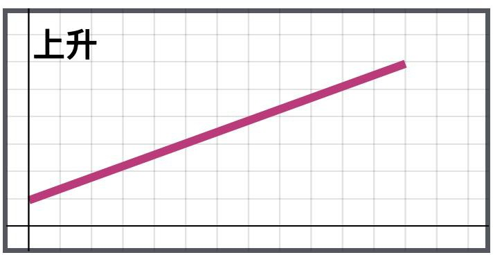
动词形式：increased, rose, grew, climbed, surged
名词形式：increase, rise, growth, upward trend, surge
轻微上升：slight increase, minimal rise, marginal growth
示例：Between 2010 and 2015, there was a minimal rise in the number of public transportation users from 1.2 million to 1.3 million.
2010 年至 2015 年间，公共交通用户数量轻微增加，从 120 万增至 130 万。
显著上升：significant increase, noticeable rise, substantial growth
示例：From 2015 to 2020, there was a substantial growth in the sales of electric vehicles, jumping from 50,000 to 200,000 units.
2015 年至 2020 年间，电动车销量显著增长，从 5 万辆跃升至 20 万辆。
迅速上升：rapid increase, sharp rise, steep ascent
示例：The adoption rate of the new software saw a steep ascent within the first six months, reaching 10,000 companies.
新软件的采纳率在前六个月内急剧上升，达到了 1 万家公司。
持续上升：continuous increase, sustained growth, steady climb
示例：There has been a continuous increase in online shopping since 2010, with revenue growing steadily each year.
自 2010 年以来，网上购物持续增长，每年收入稳步上升。
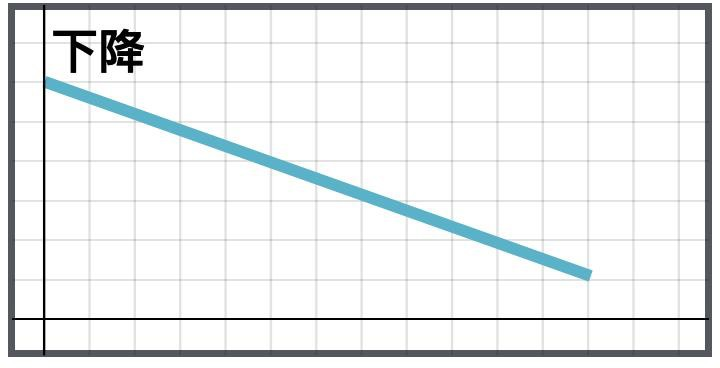
动词形式：decreased, fell, dropped, declined, plummeted
名词形式：decrease, fall, drop, decline, plunge
轻微下降：slight decrease, minimal drop, marginal decline
示例：In 2019, there was a slight decrease in the number of tourists visiting the park, from 800,000 to 790,000. 2019 年，访问公园的游客数量轻微下降，从 80 万减至 79 万。
显著下降：significant decrease, noticeable drop, substantial decline
示例：The production of coal in the region saw a substantial decline from 2010 to 2020, dropping by 40%. 2010 年至 2020 年间，该地区的煤炭生产显著下降了 40%。
迅速下降：rapid decrease, sharp drop, steep descent
示例：After the announcement of new environmental regulations, plastic usage saw a sharp drop within a year.
新环保法规公布后，塑料使用量在一年内急剧下降。
持续下降：continuous decrease, sustained decline, steady fall
示例：Interest rates have experienced a steady fall over the last decade, reaching historic lows.
在过去十年中，利率持续下降，达到历史低点。
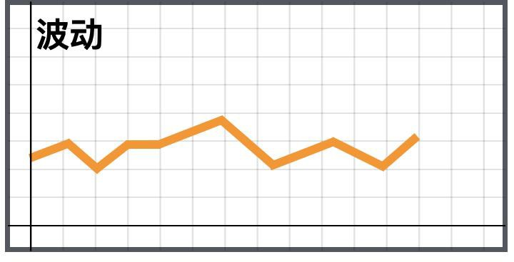
动词形式：fluctuated, varied
名词形式：fluctuation trend, variation trend
轻微波动：minor fluctuations, slight variations
示例：The exchange rates between the two currencies showed minor fluctuations throughout 2018. 2018 年间，两种货币之间的汇率显示了轻微波动。
显著波动：significant fluctuations, considerable variations
示例：The stock market experienced significant fluctuations in 2020. 2020 年，股市经历显著波动。
周期性波动：cyclical fluctuations, periodic variations
示例：The prices of wheat show cyclical fluctuations, peaking each November due to seasonal demands.
小麦价格显示出周期性波动，由于季节性需求每年 11 月达到高点。
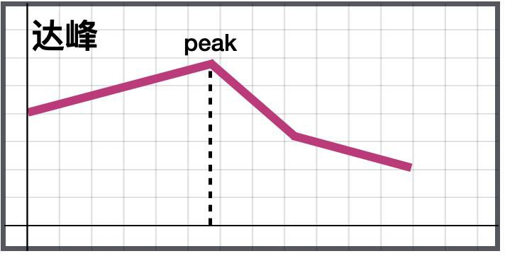
Peak
all-time high record high
Peak
示例：The stock market reached its peak in August.
8 月份，股市达到顶峰。
all-time high
示例：In July 2019, electricity consumption reached an all-time high. 2019 年 7 月，电力消耗达到历史最高水平。
record high
示例：Solar energy production in Germany reached a record high in May 2021. 2021 年 5 月，德国太阳能发电量达到记录最高值。
trough
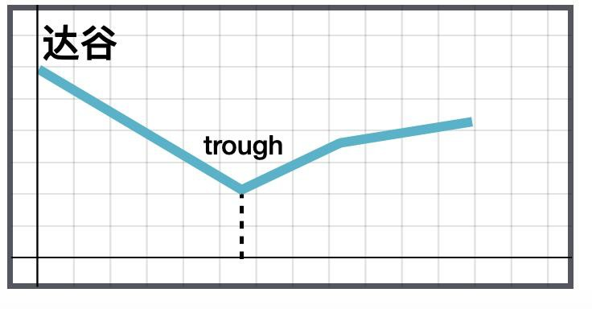
all-time low record low
trough
示例：Investments in commercial real estate hit a trough in 2018, with a 20% decline from the previous year. 2018 年，商业房地产投资进入低谷，比前一年下降了 20%。
all-time low
示例：Interest rates were at an all-time low in 2022. 2022 年，利率达到历史最低。
record low
示例：During 2008, investment levels hit a record low.
在 2008 年间，投资水平达到历史低点。
unchanged static stable steady
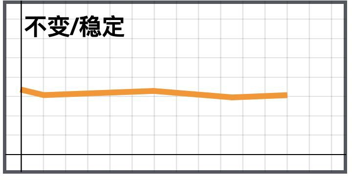
unchanged
示例：The educational spending remained unchanged throughout the 2010s.
教育支出在 2010 年代始终未改变。
static
示例：The unemployment rate remained static at 5% throughout 2017. 2017 年全年失业率保持在 5%不变。
stable
示例：The exchange rate between the dollar and the euro remained stable through 2020, fluctuating only slightly between 1.10 and 1.15.
2020 年美元与欧元的汇率保持稳定，仅在 1.10 至 1.15 之间轻微波动。
steady
示例：There has been a steady growth in the number of electric cars sold, increasing by about 30% each year since 2018.
自 2018 年以来，售出的电动车数量稳定增长，每年增长约 30%。
growth projection expected increase expected to rise predicted to increase
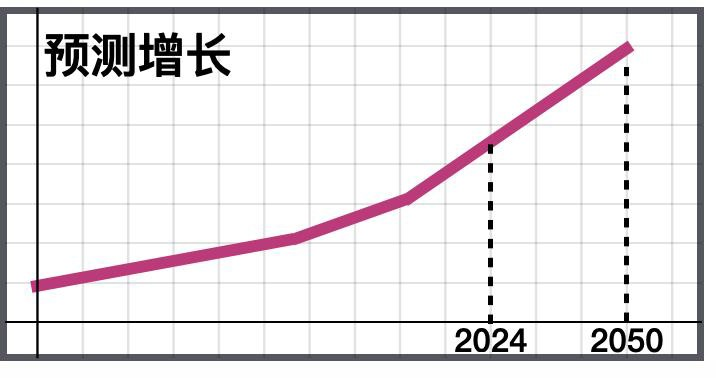
growth projection
示例：The growth projection for the Asian market is optimistic, expecting a 25% increase in sales by 2030.
对亚洲市场的增长预测是乐观的，预计到 2030 年销售额将增长 25%。
expected increase
示例：An expected increase in global oil demand is projected to rise by 10% by 2023.
预计到 2023 年全球石油需求将增长 10%。
expected to rise
示例：Graduate employment rates are expected to rise, possibly reaching 90% in 2024.
毕业生就业率将上升，2024 年可能达到 90%。
predicted to increase
示例：Subsequently, the consumption of daily necessities is predicted to increase before the year 2050.
随后日用品的消费量将在 2050 年之前预测增长。
对比数据
（一）一般描述
... differed significantly between ... and ...
示例：Sales figures differed significantly between rural and urban areas.
销售数字在农村和城市地区之间有显著差异。
In contrast to ...,
示例：In contrast to the north, the southern region had higher rainfall.
与北部相比，南部地区的降雨量更高。
Unlike ..., ... featured ...
示例：Unlike previous models, the new version featured enhanced security features.
与之前的模型不同，新版本具有增强的安全功能。
While ..., ... saw ...
示例：While the east coast remained dry in July, the west coast saw heavy rains.
东海岸 7 月保持干燥，而西海岸出现大雨。
Compared to ..., ... displayed ...
示例：Compared to country A, country B displayed a higher number of innovations.
与 A 国相比，B 国展示了更多的创新。
... was markedly different from ... in ...
示例：The marketing approach was markedly different from the competition in creativity.
在创意方面，营销方式与竞争对手明显不同。
（二）特殊趋势描述
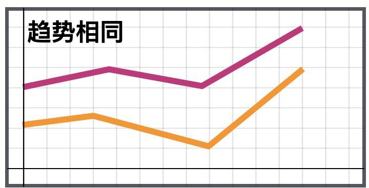
parallel similar
mirror each other
parallel
示例：Between 2000 and 2010, the sales of smartphones and tablets showed parallel increases.
从 2000 年到 2010 年，智能手机和平板电脑的销量呈现出相同的增长趋势。
similar
示例：The economic growth patterns of Canada and Australia have been similar over the last decade, with both countries averaging a 3% annual GDP growth.
在过去十年中，加拿大和澳大利亚的经济增长模式相似，两国的年均 GDP 增长率均为 3%。
mirror each other
示例：The sales figures of the two competing brands have mirrored each other throughout 2020, both peaking in July and declining in October.
2020 年，两个竞争品牌的销售数字相互映射，均在 7 月达到高峰并在 10 月下降。
opposite diverge
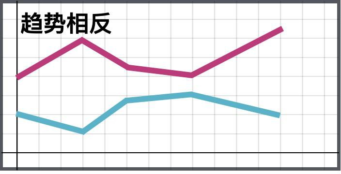
move inversely contrast
opposite
示例：While the consumption of fossil fuels steadily declined from 2010 to 2020, investment in renewable energy sources experienced a marked increase, demonstrating clearly opposing trends.
2010 年至 2020 年，化石燃料消耗量稳步下降，而可再生能源投资却大幅增加，呈现出明显的相反趋势。
diverge
示例：After 2015, the investment strategies of the two firms began to diverge, one focusing on renewable energy and the other on fossil fuels.
2015 年后，两家公司的投资策略开始分歧，一家专注于可再生能源，另一家专注于化石燃料。
move inversely
示例：As smartphone sales have skyrocketed, sales of digital cameras have moved inversely, plummeting in recent years.
随着智能手机销量的飙升，数码相机的销量却呈反向移动，近年来急剧下降。
contrast
示例：The employment rates in urban and rural areas contrast sharply, with urban areas showing significantly higher rates of job availability.
城市和农村地区的就业率形成鲜明对比，城市地区的就业机会明显更多。
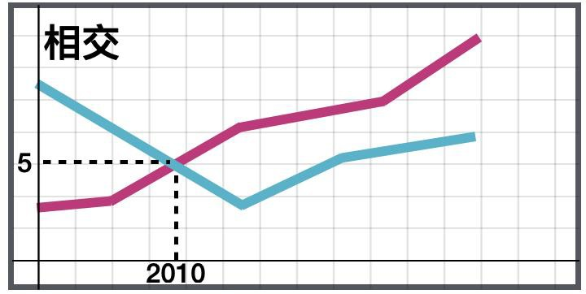
converge cross meet
converge
示例：The rates of technological adoption in developing countries converged with those in developed countries in 2010.
预计到 2010 年，发展中国家的技术采纳率将与发达国家汇聚。
cross
示例：The revenue lines of online and offline sales crossed in 2010. 2010 年，线上和线下销售的收入线相交叉。
meet
示例：The educational goals of increasing literacy rates and reducing dropout rates are expected to meet by the year 2025, through coordinated governmental efforts.
通过政府的协调努力，提高识字率和降低辍学率的教育目标预计将在 2025 年实现相遇。
地图题词汇
大部分术语会在题中给出，但部分术语不会，至少需要熟悉
地理位置
At the top/bottom (在顶部/底部)
To the north/south/east/west of (位于…的北/南/东/西边)
In the northeastern/southwestern corner（在东北/西南角）
Adjacent to (紧挨着/毗邻)
Bordering (与...接壤)
Alongside (沿着/与…并排)
Near (附近)
Surrounding (环绕)
描述变化
Converted into (被改造成)
Replaced by (被替换为)
Demolished (被拆除)
Removed (被移除)
Constructed/Built (修建)
Extended/Expanded (延伸)
Developed into (开发成)
Introduced (引入/增设)
描述没有变化
Remained unchanged (保持不变)
No significant changes (没有显变化)
Maintained (保持)
方向和移动
Move from... to... (从...移动到...)
Go along (沿着)
Head towards (朝着...前进)
Extend (延伸)
Connect (连接)
规模和尺寸
Small (小)
Large (大)
Tiny (微小)
Enormous (巨大)
Scale (规模)
Size (尺寸)
使用方位词
Above (在...上方)
Below (在...下方)
Between (在...之间)
Beside (在...旁边)
Next to (紧邻)
Across from (在...对面)
建筑室内
Floor (地板)
Ceiling (天花板)
Roof (屋顶)
Basement (地下室)
Column (柱子)
Stairs (楼梯)
Balcony (阳台)
Corridor (走廊)
Kitchen (厨房)
Bathroom (浴室)
Bedroom (卧室)
Living room (客厅)
Façade (建筑立面)
Frontage (前立面)
Entrance (入口)
Lobby (酒店或公寓大堂)
建筑和地标
Building (建筑)
House (房屋)
Apartment building (公寓楼)
Skyscraper (摩天大楼)
Office building (办公楼)
Factory (工厂)
School (学校)
Hospital (医院)
Church (教堂)
Park (公园)
Bridge (桥)
Airport (机场)
Train station (火车站)
Shopping mall (购物中心)
城市和区域
City (城市)
Town (小镇)
Suburb (郊区)
District (地区)
Region (地区)
Coastal area (沿海地区)
Rural area (农村地区)
Urban area (城市地区)
Downtown (市中心)
Urban Planning (城市规划)
Redevelopment (重建)
Urban Renewal (城市更新)
Urbanization (城市化)
Land Use (用地规划)
Mixed-Use Development (混合用途开发)
Pedestrian-Friendly (步行友好)
Infrastructure (基础设施-道路，水，电厂等)
Zoning (区域划分)
Central Business District (中央商务区-一般是城市中心)
Residential Area (居住区)
Highway/Expressway (高速路/快速路)
Major Road (主干道)
Secondary Road (次干道)
Branch Road (支路-等级低于主干道和次干道的路)
Public Space (公共空间)
Plaza (城市广场-周边有商业那种)
Square (广场-一般是四四方方，周边没有商业功能)
Green Space (绿地)
Skyline (天际线)
Landscape (园林景观)
Density (密度)
Population (人口)
自然地理特征
River (河)
Lake (湖)
Mountain (山)
Valley (山谷)
Forest (森林)
Ocean (海洋)
Beach (海滩)
Island (岛屿)
Desert (沙漠)
Peninsula (半岛)
流程图
术语几乎会在图中给出
开始过程
Initially (最初)
At the outset (起初)
To begin with (首先)
In the beginning (一开始)
The process commences with (过程以...开始)
继续过程
Subsequently (随后)
Following that (随后)
Next (接下来)
Afterward (然后)
In the next stage (在下一阶段)
Moving on (继续)
Then (然后)
Later (后来)
Simultaneously (同时)
Concurrently (与此同时)
Meanwhile (与此同时)
结束过程
Finally (最后)
In the end (最后)
Ultimately (最终)
To conclude (总结)
To summarize (概括)
To finish (结束)
Wrapping up (结束)
表示方向或顺序
Along the way (沿途)
In the sequence (按顺序)
In a parallel fashion (以相似的方式)
In a stepwise manner (逐步)
In a systematic order (按系统的顺序)
One after another (一个接一个)
添加细节的短语
After that (之后)
Following these steps (在这些步骤之后)
In a similar fashion (以类似的方式)
By comparison (相比之下)
Unlike (不同于)
小作文范文
类型 1: 饼图
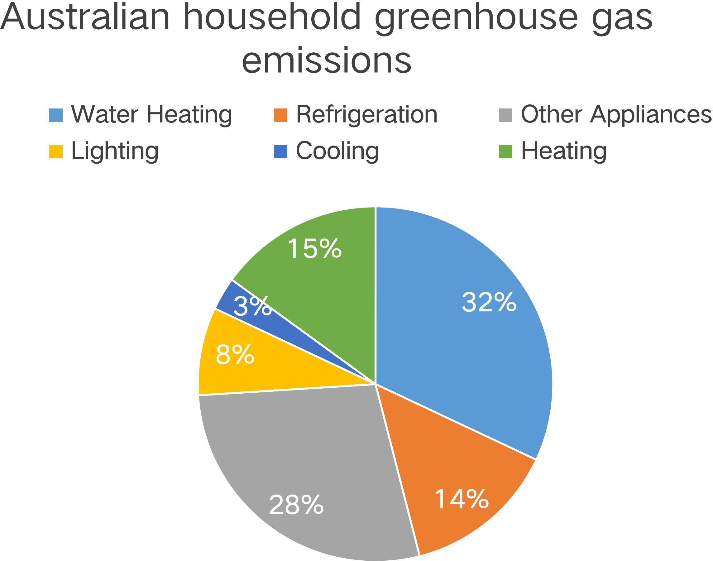
饼图 1:
The first chart below shows how energy is used in an average Australian household. The second chart shows the greenhouse gas emissions which result from this energy use.
Summarise the information by selecting and reporting the main features, and make comparisons where relevant.
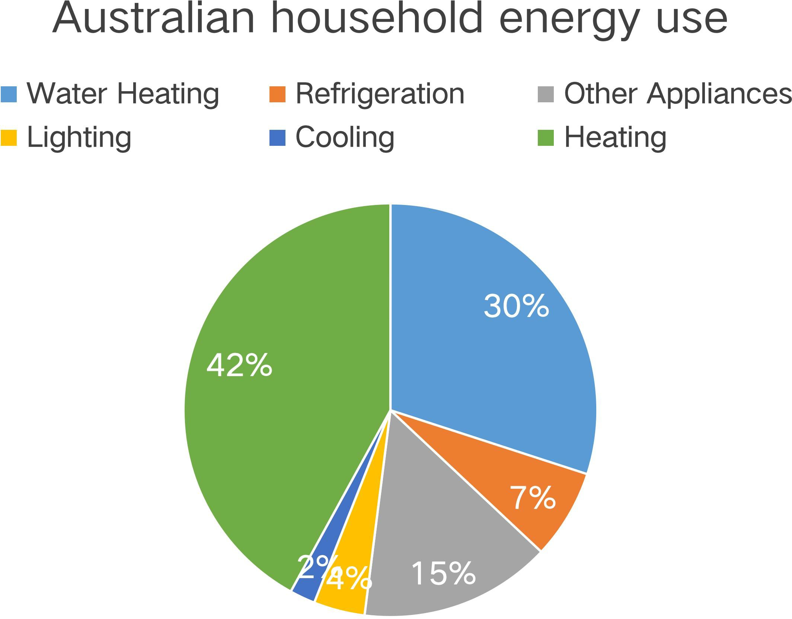
The pie charts illustrate the distribution of energy consumption in an average Australian household and the corresponding greenhouse gas emissions produced.
饼图显示了澳大利亚普通家庭的能源消耗分布和相应的温室气体排放量。
Overall, the data suggest an imbalance between energy consumption and greenhouse gas emissions across activities. Heating, despite being the predominant energy consumer, is not the main contributor to emissions. Other appliances, as well as cooling, lighting, and refrigeration, generate a double amount of greenhouse gases relative to their energy consumption.
总体而言，数据显示，各项活动的能源消耗和温室气体排放之间存在不平衡。供暖虽然是主
要的能源消耗，但并不是排放的主要贡献者。其他电器以及制冷、照明和冷藏产生的温室气体量是其能源消耗的两倍。
From the first chart, it is apparent that heating is the largest energy consumer, comprising 42% of total household energy usage. Water heating follows, accounting for 30%. In contrast, other energy needs like cooling, lighting, and refrigeration are relatively lower, with cooling at 2%, lighting at 4%, and refrigeration at 7%. Other appliances make up the remaining 15% of energy use.
从第一张图表可以看出，供暖是最大的能源消耗者，占家庭能源总消耗量的 42%。紧随其
后的是热水，占 30%。相比之下，制冷、照明和冷藏等其他能源需求相对较低，制冷占 2%，照明占 4%，冷藏占 7%。其他电器占能源使用量的剩余 15%。
However, the second chart presents a different perspective when it comes to greenhouse gas emissions. Water heating, while constituting 30% of energy use, is responsible for a significant 32% of emissions. Interestingly, the greenhouse gas emissions from heating represent just 15%, which is considerably lower than its share of energy consumption. Other appliances, though only 15% of energy usage, contribute to 28% of the greenhouse gases. Similarly, cooling, lighting, and refrigeration are responsible for double proportions of emissions compared to their energy consumption, at 3%, 8%, and 14%, respectively.
然而，第二张图表在温室气体排放方面呈现出不同的视角。热水虽然占能源使用量的 30%，
但却造成了 32% 的排放量。有趣的是，供暖产生的温室气体排放量仅占 15%，远低于其在能源消耗中所占的份额。其他电器虽然只占能源使用量的 15%，但却贡献了 28% 的温室气体。同样，制冷、照明和冷藏的排放量是其能源消耗的两倍，分别为 3%、8% 和 14%。
饼图 2:
The charts below show the proportions of British students at one university in England who were able to speak other languages in addition to English, in 2000 and 2010.
Summarise the information by selecting and reporting the main features, and make comparisons where relevant.
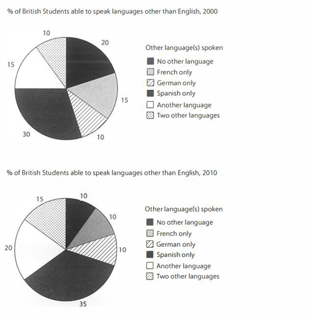
The pie charts illustrate the linguistic capabilities of British university students in England who could speak languages other than English in 2000 and 2010.
饼状图显示了 2000 年和 2010 年英国大学学生的语言能力，这些学生会说英语以外的其
他语言。
Overall, the proportion of German speakers remained stable. The percentage of monolingual students and those proficient in French declined, whereas the numbers of trilingual students, and those fluent in Spanish and one another language increased. The data indicates a diversification in language acquisition among British students, with a growing number learning Spanish and languages other than French or German.
总体而言，德语使用者的比例保持稳定。单语学生和精通法语的学生比例下降，而三语学生
和精通西班牙语和另一种语言的学生数量增加。数据显示，英国学生的语言习得方式多样化，越来越多的学生学习西班牙语和法语或德语以外的其他语言。
In 2000, the majority of students were not able to speak any language other than English, comprising 30% of the student population. By 2010, this figure had risen to 35%. Excluding French, German, or Spanish, students who could speak one other language also saw an increase from 15% to 20%. Notably, the proportion of students who were trilingual increased from 10% to 15%.
2000 年，大多数学生不会说英语以外的任何语言，占学生总数的 30%。到 2010 年，这
一数字上升到 35%。除了法语、德语或西班牙语，会说另一种语言的学生也从 15% 增加到 20%。值得注意的是，三语学生的比例从 10% 增加到 15%。
In terms of specific languages, French experienced a decline in speakers. The percentage of students able to speak only French fell from 15% in 2000 to 10% in 2010, while those who could speak only Spanish increased from 30% to 35% in the same period. The proportion of German speakers remained unchanged at 10%.
就具体语言而言，法语使用者数量有所下降。只会说法语的学生比例从 2000 年的 15% 下
降到 2010 年的 10%，而只会说西班牙语的学生比例在同一时期从 30% 增加到 35%。说德语的学生比例保持不变，仍为 10%。
类型 2: 柱状图
柱状图 1:
The chart below shows the number of households in the US by their annual income in 20072011 and 2015.
Summarise the information by selecting and reporting the main features, and make comparisons where relevant.
The bar chart illustrates the income distribution among US households in 2007, 2011 and 2015.
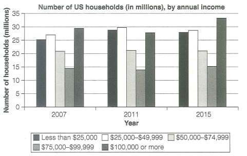
条形图显示了 2007 年、2011 年和 2015 年美国家庭的收入分布。
Overall, the number of households with earnings ranging from $50,000 to $74,999 exhibited a relatively consistent pattern over the span of eight years, while both the low and high-income households (below $49,999 and above $75,000) showcased an upward trajectory. Notably, a significant majority of US households had an income exceeding
$100,000, whereas the income range of $75,000 to $99,999 held a comparatively small share.
总体而言，收入在 50,000 美元至 74,999 美元之间的家庭数量在八年内呈现出相对一致
的模式，而低收入和高收入家庭（低于 49,999 美元和高于 75,000 美元）都呈现出上升
趋势。值得注意的是，绝大多数美国家庭的收入超过 100,000 美元，而收入在 75,000 美
元至 99,999 美元之间的家庭所占比例相对较小。
The income category below $50,000 displayed a minor increment in its figures. In 2007, the count of households earning less than $25,000 stood at 25 million, slightly fewer than the 27 million households within the $25,000 to $49,999 range. By 2015, both categories
had experienced modest growth, each accommodating around 28 million households, although their figure in 2011 reached 29 and 30 million respectively.
低于 50,000 美元的收入类别的数字略有增加。2007 年，收入低于 25,000 美元的家庭数
量为 2500 万，略少于 25,000 美元至 49,999 美元范围内的 2700 万家庭。到 2015 年，
这两个类别都经历了适度增长，每个类别都容纳了约 2800 万户家庭，尽管 2011 年这两
个类别的数字分别达到了 2900 万和 3000 万。
However, the segment of households within the $50,000 to $74,999 income range remained stable throughout the given period, with 21 million households earning between $50,000 and $74,999.
然而，收入在 50,000 至 74,999 美元范围内的家庭部分在整个给定时期保持稳定，有
2100 万户家庭的收入在 50,000 至 74,999 美元之间。
The lowest and highest income categories experienced the same changes of a decrease and then an increase. The most prominent shift occurred in the highest income category, surpassing $100,000, surging from nearly 30 million households in 2007 to a pinnacle of
33 million in 2015, despite a slight dip to 27 million recorded in 2011. Lastly, approximately 15 million households fall in the $75,000 to $99,999 range.
最低收入和最高收入类别经历了相同的变化，先下降后上升。最显著的变化发生在最高收入
类别，超过 100,000 美元，从 2007 年的近 3000 万户激增至 2015 年的 3300 万户，
尽管 2011 年略有下降至 2700 万户。最后，大约有 1500 万户家庭的收入在 75,000 至
99,999 美元之间。
柱状图 2:
The charts below show the percentage of males and females who got married in different ages in the UK in 1996 and 2008.
Summarise the information by selecting and reporting the main features, and make comparisons where relevant.
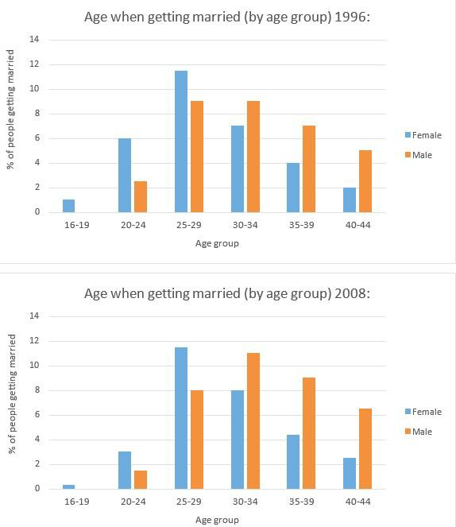
The bar charts compare the proportions of men and women in the UK who entered into matrimony across various age groups in 1996 and 2008.
条形图比较了 1996 年和 2008 年英国不同年龄组结婚的男女比例。
Overall, the data indicate a postponement in the age of marriage in the UK, particularly among those in their late thirties. In both years, women married earlier than men, and this trend became more pronounced over the 12-year span.
总体而言，数据显示英国结婚年龄有所推迟，尤其是 30 多岁的人群。在这两年中，女性
结婚早于男性，而且这种趋势在 12 年的时间跨度内变得更加明显。
In 1996, the younger age group (16-19) had the smallest percentages for females, with no male data in this group. By 2008, this category almost disappeared. The most significant change occurred in the 20-24 age group, where both genders saw a decrease in the percentage of marriages. In 1996, the percentage of men marrying in this age range was approximately 2.5%, but by 2008 it had dropped to just under 2%. For women, the figures decreased from about 6% to 3. In the 25-29 age bracket, the proportion of females getting married remains the same, while the proportion of males getting married in this age group showed a decrease from 9% to 8%. The shift in the 3 age groups suggests a shift away from very young marriages.
1996 年，年轻年龄组（16-19 岁）的女性比例最小，该组中没有男性数据。到 2008 年，
这一类别几乎消失。最显著的变化发生在 20-24 岁年龄组，男女结婚率均有所下降。1996年，这个年龄段的男性结婚率约为 2.5%，但到 2008 年，这一比例已降至略低于 2%。对于女性来说，这一数字从约 6% 下降到 3。在 25-29 岁年龄段中，女性结婚比例保持不变，而这一年龄段男性结婚比例从 9% 下降到 8%。这三个年龄段的变化表明，人们不再选择年轻时的婚姻。
The trend of marrying at a later age was underscored by the increase in marriages within the group beyond 30 years old. The most notable increase occurred in the 30-34 age group for both genders, with a notably higher rise for males(from 9% to 11%). This trend continued into the 40-44 age group, although the percentages were lower compared to the 30-34 age group.
30 岁以上的结婚人数增加，凸显了晚婚的趋势。男女结婚人数增加最显著的年龄段是
30-34 岁，男性的增幅明显更高（从 9% 上升到 11%）。这一趋势一直延续到 40-44 岁
年龄段，尽管与 30-34 岁年龄段相比，这一比例较低。
柱状图 3:
The chart shows the percentage of the total world population in four countries in 1950, 2002 and 2050.
Summarise the information by selecting and reporting the main features, and make comparisons where relevant.
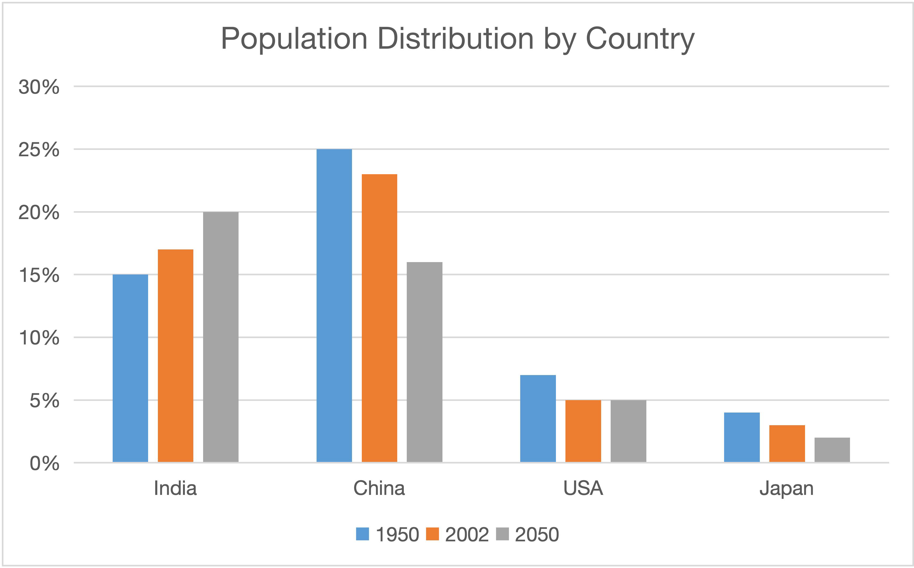
The bar chart provides data on the proportion of the world's population represented by India, China, the USA, and Japan in the years 1950, 2002, and projected for 2050.
该柱状图提供了 1950 年、2002 年和 2050 年预测的印度、中国、美国和日本占世界人
口比例的数据。
Overall, the chart shows a notable rise in India's share of the global population over the century, with a peak anticipated in 2050. China's percentage is observed to decline over time after its peak in 1950. In comparison, the USA and Japan are represented by relatively smaller and more stable proportions of the world's population.
总体而言，该图显示印度占世界人口的比例在过去一个世纪中显著上升，预计在 2050 年
达到峰值。中国的比例在 1950 年达到峰值后，随着时间的推移逐渐下降。相比之下，美国和日本占世界人口的比例相对较小且更稳定。
Initially, in 1950, China had the highest percentage of the world's population, about 25%, while India followed with just under this figure at 15%. The USA's share was around 7%, and Japan had the smallest percentage, slightly under 5%. By 2002, China's share had
decreased to 23%, while India's proportion of the world population increased slightly, indicating a convergence of the percentages of these two populous nations. Projections for 2050 suggest that China's proportion is expected to decline further. India's population will continue to grow as a percentage of the world total, surpassing China's with a figure close to 20%.
最初，在 1950 年，中国占世界人口的比例最高，约为 25%，而印度紧随其后，略低于这
一数字，为 15%。美国的份额约为 7%，日本的比例最小，略低于 5%。到 2002 年，中国的份额下降到 23%，而印度占世界人口的比例略有上升，表明这两个人口大国的比例趋于趋同。 2050 年的预测显示，中国的比例预计将进一步下降。印度人口占世界总人口的比例将继续增长，超过中国，接近 20%。
In contrast, the USA is projected to maintain a stable percentage of approximately 5% from 2002 through 2050. Japan's share, meanwhile, is expected to decrease slightly, maintaining its position as the country with the lowest percentage among the four, nearing 2%.
相比之下，预计美国的比例将从 2002 年到 2050 年稳定保持在 5% 左右。与此同时，日
本的比例预计将略有下降，仍是四国中比例最低的国家，接近 2%。
柱状图 4:
The chart below shows the percentage of households in owned and rented accommodation in England and Wales between 1918 and 2011.
Summarise the information by selecting and reporting the main features, and make comparisons where relevant.
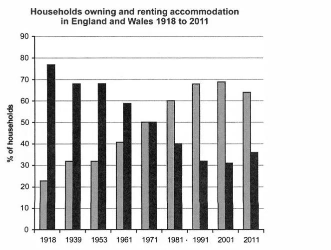
households in owned accommodation households in rented accommodation
The bar chart provides data on the proportions of households in England and Wales that lived in owned versus rented accommodation over a period of 93 years, from 1918 to 2011.
条形图提供了 1918 年至 2011 年 93 年间英格兰和威尔士自有住房和租房家庭的比例
数据。
Overall, the data show a long-term increase in the rate of homeownership in England and Wales, which became the dominant form of accommodation from the mid-20th century onwards. However, the final years show a reversal of this trend, with a slight increase in the percentage of households opting for rented accommodation.
总体而言，数据显示英格兰和威尔士的房屋自有率长期呈上升趋势，自 20 世纪中叶以来，房屋自有率成为主要的住房形式。然而，最后几年这一趋势出现逆转，选择租房的家庭比例略有增加。
In 1918, a minority of households lived in owned accommodation, accounting for just over 20%, while the vast majority, nearing 80%, were in rented accommodation. Over the next two decades, the gap between the two categories narrowed, with a slight increase in homeownership to about 32% and a corresponding decrease in rented accommodations to 68%. Notably, the number of households in owned and rented accommodations in 1953 was the same as in 1939.
1918 年，少数家庭住在自有住房中，占比略高于 20%，而绝大多数家庭住在租房中，接
近 80%。在接下来的二十年里，这两类家庭之间的差距缩小了，房屋自有率略有上升至约 32%，而租房比例则相应下降至 68%。值得注意的是，1953 年拥有和租住住房的家庭数量与 1939 年相同。
From 1953 to 1971, there was a significant shift towards homeownership. By 1971, the percentage of households owning their accommodation rose to approximately 50%, equating to the percentage of those renting.
从 1953 年到 1971 年，住房所有权发生了显著转变。到 1971 年，拥有住房的家庭比例
上升到约 50%，与租房家庭的比例相当。
After 1971, the trend towards increased homeownership continued, peaking in 2001 when around 69% of households owned their homes. This was the highest recorded percentage within the given timeframe. However, in the following decade, there was a notable decline in this trend, with the proportion of households in owned accommodation falling back to around 65% in 2011. On the other hand, after the decline from 65% in 1918 to 31% in 2001, the percentage of households in rented accommodation began to increase gradually, reaching about 35% by 2001.
1971 年之后，住房所有权增加的趋势持续，在 2001 年达到顶峰，当时约 69% 的家庭
拥有住房。这是给定时间范围内的最高记录百分比。然而，在接下来的十年里，这一趋势明显下降，拥有住房的家庭比例在 2011 年回落到 65% 左右。另一方面，在从 1918 年的
65% 下降到 2001 年的 31% 之后，租住住房的家庭比例开始逐渐增加，到 2001 年达到约 35%。
柱状图 5:
The chart below gives information abouthow families in one country spent their weekly income in 1968 and in 2018.
Summarise the information by selectingand reporting the main features, and make comparisons where relevant.
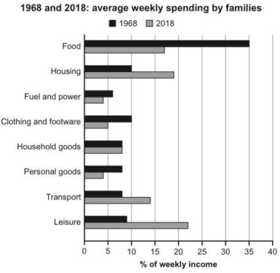
The presented bar chart shows the expenditure patterns of weekly average households in a specific country in 1968 and 2018.
所呈现的条形图显示了 1968 年和 2018 年特定国家/地区每周平均家庭的支出模式。
Overall, significant shifts in spending preference are observed between 1968 and 2018, with leisure surpassing food as the primary expenditure. Notably, household goods remain a consistent component of weekly spending.
总体而言，1968 年至 2018 年间，消费偏好发生了显著变化，休闲支出超过食品支出，成
为主要支出。值得注意的是，家庭用品仍然是每周支出的一致组成部分。
In 1968, food constituted the majority of household spending, accounting for 35% of
weekly income. However, by 2018, this figure had nearly halved, dropping to approximately 17%. In contrast, spending on leisure experienced a substantial increase, reaching 22% in 2018, thereby becoming the dominant expenditure. This upward trend is also evident in housing and transportation expenses. In 2018, the allocation for housing rose to approximately 18% from 10% in 1968, while spending on transportation went from 6% in 1968 to 14% in 2018.
1968 年，食品占家庭支出的大部分，占每周收入的 35%。然而，到 2018 年，这一数字
几乎减半，降至约 17%。相比之下，休闲支出大幅增加，在 2018 年达到 22%，从而成为主要支出。这种上升趋势在住房和交通支出中也很明显。 2018 年，住房支出从 1968 年
的 10% 上升至约 18%，而交通支出从 1968 年的 6% 上升至 2018 年的 14%。
Conversely, clothing and footwear, fuel and power, and personal goods all experienced reductions in 2018, each of them accounting for no more than 5% of weekly income. Lastly, spending on household goods remained constant at 7% in both 1968 and 2018.相反，服装和鞋类、燃料和电力以及个人物品在 2018 年均出现下降，每项支出占每周收
入的比例均不超过 5%。最后，家庭用品支出在 1968 年和 2018 年均保持在 7% 的稳
定水平。
柱状图 6:
The chant below shows the total number of minutes (in bilions) of telephonecalls in the UK, divided into three categories, from 1995-2002.
Summarize the information by selecting and reporting the main features, and make comparisons where relevant.
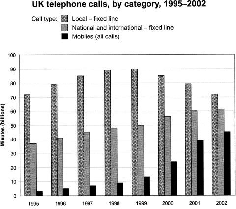
The provided bar graph illustrates the cumulative duration, measured in billions of minutes, spent on three distinct types of telephone calls in the United Kingdom from the year 1995 to 2002.
所提供的条形图显示了 1995 年至 2002 年英国三种不同类型电话通话的累计时长（以十
亿分钟为单位）。
Overall, local calls emerged as the predominant choice throughout the entire period, followed by national and international calls, with mobile calls ranking third. However, it is noteworthy that the duration of international and national calls, as well as mobile calls, experienced upward trends over the specified duration, with mobile phone usage witnessing a remarkable surge. This led to a gradual convergence in the total minutes spent across all three categories by the conclusion of 2002.
总体而言，本地通话在整个期间成为主要选择，其次是国内和国际通话，移动电话排名第三。然而，值得注意的是，国际和国内通话以及移动电话的通话时长在指定时间内呈上升趋势，移动电话使用量出现显著增长。这导致到 2002 年底，这三种类别的总通话时间逐渐趋于一致。
Commencing with local calls, the duration of these total calls exhibited fluctuations over the given timeframe. In 1995, approximately 70 billion minutes were consumed for local calls. This figure witnessed an ascent, reaching its zenith at around 90 billion minutes in 1999. Subsequently, there was a steady decline, resulting in slightly over 70 billion minutes spent on local calls by 2002.
从本地通话开始，这些总通话时长在给定的时间范围内表现出波动。1995 年，本地通话时
间约为 700 亿分钟。这一数字呈上升趋势，在 1999 年达到顶峰，约为 900 亿分钟。随
后，这一数字稳步下降，到 2002 年，本地通话时间略高于 700 亿分钟。
In contrast, national and international calls displayed consistent growth on an annual basis. In 1995, just below 40 billion minutes were expended on such calls, and this figure experienced a continuous ascent, culminating at slightly over 60 billion minutes in 2002. Remarkably, mobile phone usage depicted a remarkable escalation, with the number of minutes spent on mobile calls surging from approximately 3 billion in 1995 to roughly 45 billion in 2002.
相比之下，国内和国际通话时间每年都在稳步增长。1995 年，此类通话时间略低于 400 亿
分钟，这一数字持续上升，在 2002 年达到略高于 600 亿分钟。值得注意的是，手机使用
量出现了显著增长，手机通话时间从 1995 年的约 30 亿分钟飙升至 2002 年的约 450
亿分钟。
柱状图 7:
The bar chart shows information&bsp;about the favorite subjects of students from two middle schools, school A and school B.
Summarize the information by selecting and reporting the main features, and make comparisons where relevant.
The bar chart delineates the preferences of students regarding various academic subjects in two distinct educational institutions, School A and School B.
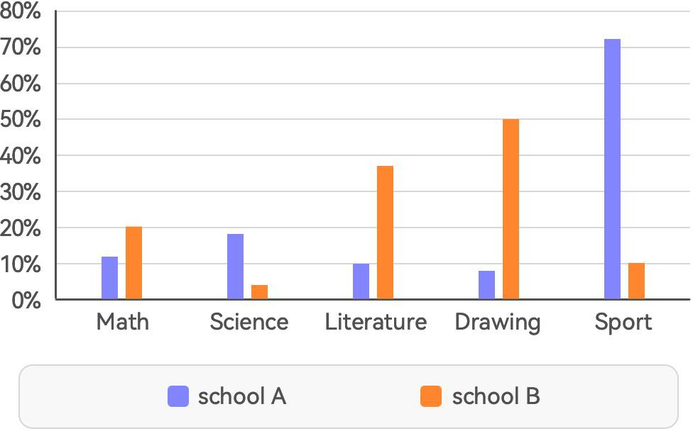
条形图描绘了两所不同教育机构（学校 A 和学校 B）学生对各种学术科目的偏好。
Overall, it is evident that student preferences for subjects diverge considerably between the two schools. School A's students predominantly favor sports, with a significant majority expressing preference for this subject. Conversely, at School B, painting emerges as the most popular choice.
总体而言，很明显，两所学校的学生对科目的偏好存在很大差异。学校 A 的学生主要喜欢
体育，绝大多数人表示喜欢这门科目。相反，在学校 B，绘画成为最受欢迎的选择。
In a detailed breakdown, half of School B’s cohort exhibits a preference for painting, a figure that is sizably greater by over sixfold compared to the mere 8% at School A. Literature ranks as the second most favored subject at School B, attracting around 35% of its students. This is followed by mathematics, chosen by 20% of School B’s students, which is nearly twice as much as the percentage observed in School A.
详细分析后发现，学校 B 有一半的学生喜欢绘画，这一数字是学校 A 的 8% 的六倍多。文学是学校 B 的第二大热门科目，吸引了约 35% 的学生。其次是数学，学校 B 有 20%的学生选择数学，这一比例几乎是学校 A 的两倍。
Conversely, the sciences enjoy markedly less popularity at School B, with less than 5% of its students showing interest, in stark contrast to School A where this subject garners the interest of nearly a fifth of the student body. The most pronounced disparity between the two institutions is observed in the realm of sports. An overwhelming 70% of School A’ s students cite sports as their preferred subject, juxtaposed with a mere 10% at School B, highlighting a significant divergence in interest areas.
相反，科学在学校 B 的受欢迎程度明显较低，只有不到 5% 的学生表示感兴趣，这与学
校 A 形成鲜明对比，学校 A 有近五分之一的学生对科学感兴趣。两所学校最显著的差异体现在体育领域。A 校 70%的学生表示自己最喜欢体育，而 B 校只有 10%，可见两校学生的兴趣领域存在很大差异。
类型 3: 折线图
折线图 1:
The graph below shows the number of tourists visiting a particular Caribbean island between 2010 and 2017.
Summarise the information by selecting and reporting the main features, and make comparisons where relevant.
The presented line graph depicts the influx of tourists to a Caribbean island spanning seven years, commencing in 2010.
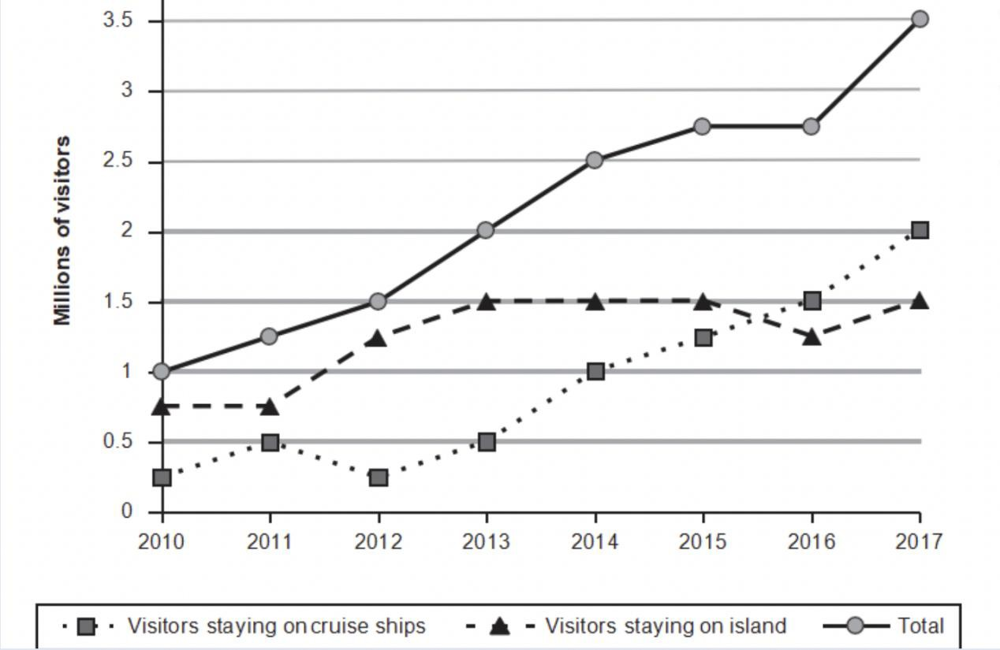
所呈现的线图描绘了自 2010 年开始的七年间涌入加勒比海岛屿的游客数量。
Overall, the graph highlights an upward trend in the number of visitors to the island throughout the period. A noteworthy trend is the evolution of preferences, with staying on cruise ships eventually surpassing staying on the island, emerging as the favored choice for travelers. However, for the majority of the period, the count of tourists who chose cruise ship accommodations remained beneath that of those selecting stays on the island.
总体而言，该图突出显示了整个时期内岛上游客数量的上升趋势。一个值得注意的趋势是偏
好的演变，在游轮上住宿最终超过在岛上住宿，成为旅行者的首选。然而，在大部分时间里，选择游轮住宿的游客数量仍低于选择在岛上住宿的游客数量。
Concerning the number of people who stayed on the island, the count commenced at approximately 0.75 million in 2010, plateauing until 2011. Subsequently, a gradual ascent ensued, peaking at 1.5 million in 2013 and sustaining this level until 2015. Notably, there was a slight decline to about 1.2 million in 2016, rebounding to the 2015 mark by the end of the period.
关于在岛上住宿的人数，2010 年开始约为 75 万人，直到 2011 年才稳定下来。随后，
人数逐渐上升，在 2013 年达到 150 万人的峰值，并一直维持这一水平直到 2015 年。
值得注意的是，2016 年略有下降，约为 120 万人，到该时期结束时又反弹至 2015 年的水平。
Conversely, the number of tourists choosing cruise ships stood at about 1.25 million in the initial year, roughly one-third of island stayers. Following minor fluctuations in the first three years, there was a substantial climb, surpassing island stays by 2015 and reaching its zenith at 2 million in the final year.
相反，选择游轮的游客数量在第一年约为 125 万人，约占岛上住宿人数的三分之一。在前
三年出现小幅波动之后，出现了大幅攀升，到 2015 年超过了岛上住宿人数，并在最后一
年达到顶峰，达到 200 万人。
Examining the overall visitor count, it witnessed a remarkable surge from 1 million to approximately 2.75 million within the initial 5 years. Subsequently, the numbers plateaued until 2016 when a sharp increase occurred, culminating in 3.5 million visitors in 2017.
从总体游客数量来看，在最初的 5 年内，游客数量从 100 万人激增至约 275 万人。随后，
游客数量一直处于稳定状态，直到 2016 年才出现急剧增长，2017 年游客数量达到 350
万人。
折线图 2:
The graph below shows the percentage of age groups who visited the cinema at least once a month in one particular country between 1978 and 2008.
Summarise the information by selecting and reporting the main features, and make comparisons where relevant.
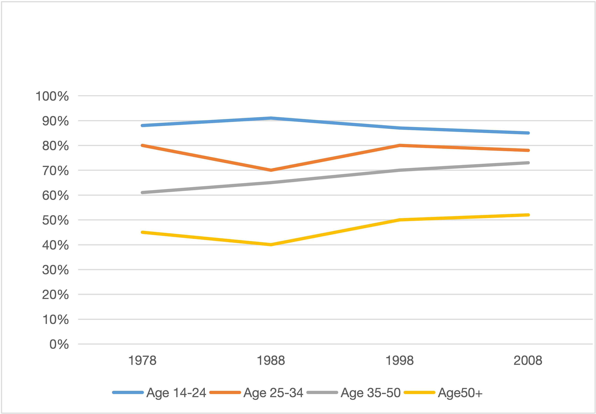
The line graph delineates the proportion of individuals across four different age groups who frequented the cinema at least monthly in a certain country from 1978 to 2008.
线图描绘了 1978 年至 2008 年期间，某个国家/地区四个不同年龄组至少每月去电影院一
次的人数比例。
Overall, while the youngest age group remained the most frequent cinema-goers, the gap between the age groups narrowed over time. The most significant changes were observed in the 35-50 category, which saw a steady increase in cinema visits over the thirty-year period.
总体而言，虽然最年轻的年龄组仍然是最常去电影院的人群，但年龄组之间的差距随着时间
的推移而缩小。最显著的变化发生在 35-50 岁年龄段，该年龄段的电影院访问量在三十年间稳步增长。
Throughout the period, the youngest age group (14-24) consistently reported the highest cinema attendance, starting at approximately 90% in 1978 and peaking at 92% in 1988, which was the highest across all age groups during the entire timeframe. After this peak,
there was a notable decline, ending at approximately 85% in 2008. The 35-50 age group displayed a gradual increase in cinema attendance over the years, starting from slightly above 60% in 1978 and reaching nearly 74% by 2008.
在此期间，最年轻的年龄组（14-24 岁）的电影院访问量始终最高，从 1978 年的约 90%
开始，到 1988 年达到 92% 的峰值，这是整个时间段内所有年龄组中最高的。在此峰值之后，出现了明显的下降，2008 年约为 85%。35-50 岁年龄组的观影人数多年来逐渐增加，从 1978 年略高于 60% 开始，到 2008 年达到近 74%。
The 25-34 age group experienced a dramatic drop from nearly 80% in 1978 to roughly 70% in 1998, before stabilizing around 75% in 2008. Meanwhile, the over-50 age group showed an ascending trend starting from about 45% and concluding at just over 50% in 2008. While the initial figures were lower than the 25-34 age group, they followed a similar trajectory over the three decades.
25-34 岁年龄组从 1978 年的近 80% 急剧下降到 1998 年的约 70%，然后在 2008 年
稳定在 75% 左右。与此同时，50 岁以上年龄组呈现上升趋势，从约 45% 开始，到 2008年达到略高于 50%。虽然最初的数字低于 25-34 岁年龄组，但在过去三十年中，它们遵循了类似的轨迹。
折线图 3:
The graph below gives information about the percentage of the population in four Asian countries living in cities from 1970 to 2020, with predictions for 2030 and 2040.
Summarise the information by selecting and reporting the main features, and make comparisons where relevant.
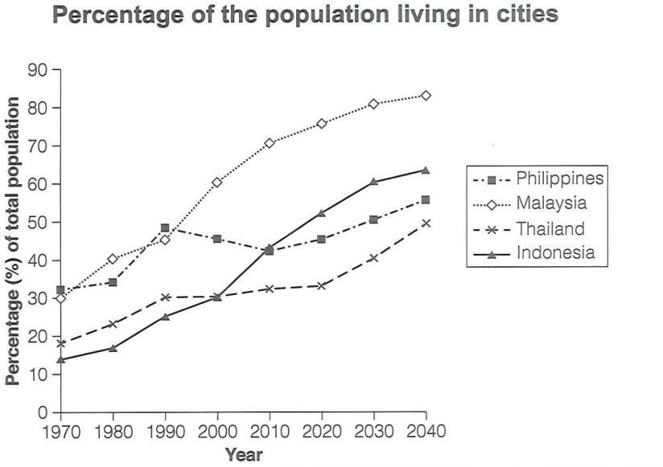
The line graph presents the urban population percentage in four Asian nations from 1970 to 2020, along with projections for the next two decades.
折线图显示了 1970 年至 2020 年亚洲四国的城市人口比例，以及未来二十年的预测。
Overall, urbanization has been an ongoing and prominent trend in the four Asian nations. While Malaysia and Indonesia have witnessed rapid and steady growth in urban population percentages, Thailand's increase has been comparatively slower. The Philippines experienced a dip in urbanization during a specific period, followed by renewed growth. Notably, Malaysia consistently holds the highest urban population percentage among them. Projections point toward a substantial surge in urban population percentages across all four countries in the coming decades.
总体而言，城市化一直是亚洲四国持续且突出的趋势。马来西亚和印度尼西亚的城市人口比
例快速而稳定地增长，而泰国的增长速度相对较慢。菲律宾在特定时期经历了城市化下降，
随后又恢复增长。值得注意的是，马来西亚的城市人口比例一直是其中最高的。预测表明，未来几十年这四个国家的城市人口比例将大幅上升。
In 1970, the urban population in the Philippines was the highest among the four, at just over 30%, with Malaysia following at around 25%. Thailand and Indonesia had significantly lower urban populations, with both under 18%. Subsequently, both Malaysia and Indonesia experienced substantial and consistent growth in urban population percentages over the five decades.
1970 年，菲律宾的城市人口比例是四国中最高的，略高于 30%，马来西亚紧随其后，约
为 25%。泰国和印度尼西亚的城市人口比例明显较低，均低于 18%。随后，马来西亚和印度尼西亚在五十年中都经历了城市人口比例的大幅而持续的增长。
Thailand, on the other hand, saw a more gradual increase in urbanization compared to the former two countries. The Philippines, in contrast, witnessed a decline from 50% to 40% between 1990 and 2010, with an upward trend in all other years. The urbanization trend continued for all countries except the Philippines, with the highest percentage reaching around 70%, projections indicate a further increase to over 80% by the 2040s.另一方面，与前两个国家相比，泰国的城市化增长更为缓慢。相比之下，菲律宾在 1990 年
至 2010 年间从 50% 下降到 40%，而其他年份都呈上升趋势。除菲律宾外，所有国家的
城市化趋势均持续，最高比例达到 70% 左右，预计到 2040 年代将进一步增加到 80% 以上。
折线图 4:
The graph below shows the percentage of households with different kinds of technology in the U.S. from 1995 to 1999.
Summarize the information by selecting and reporting the main features, and make comparisons where relevant.
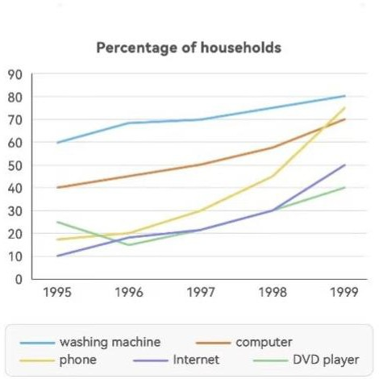
The graph depicts the percentage of U.S. households with various technologies from 1995 to 1999.
该图描绘了 1995 年至 1999 年美国家庭拥有各种技术的百分比。
Overall, while the prevalence of all listed technologies increased over the period, the washing machine remained the most common household technology. Furthermore, the significant increases in telephones and internet access within households. Apart from DVD players, the proportions of other equipment consistently showed upward trajectories.
总体而言，虽然所有列出的技术的普及率在此期间都有所增加，但洗衣机仍然是最常见的家
用技术。此外，家庭中电话和互联网接入的显著增加。除了 DVD 播放器外，其他设备的比例一直呈上升趋势。
The prevalence of washing machines in households remained consistently high, starting from just under 60% in 1995 and reaching nearly 80% by 1999. Computer ownership showed a significant surge, with around 40% in 1995, and saw a steady rise to 70% by the end of 1999.
洗衣机在家庭中的普及率一直很高，从 1995 年的不到 60% 开始，到 1999 年达到近
80%。电脑拥有率大幅上升，1995 年约为 40%，到 1999 年底稳步上升至 70%。
Telephone ownership in households saw an explosive growth, from about 18% to over 75% in these five years. A similar upward trend was observed for internet access in homes, starting from a mere 10% in 1995 and experiencing a five-fold increase to approximately 50% by 1999. Although DVD player ownership was at 25% in 1995, it experienced a rise to 35% by 1999 after experiencing a significant downturn, dwindling to just 15%.
家庭电话拥有率在这五年中呈爆炸式增长，从约 18% 增长到 75% 以上。家庭互联网接
入也呈现出类似的上升趋势，从 1995 年的仅仅 10% 开始，到 1999 年增长了 5 倍，达到约 50%。尽管 DVD 播放机的拥有率在 1995 年为 25%，但在经历了大幅下滑之后，到 1999 年又上升到 35%，当时仅为 15%。
折线图 5:
The line graph compares how much time it would take for three companies to manufacture a refrigerator in 1990 and 2000.
Summarize the information by selecting and reporting the main features, and make comparisons where relevant.
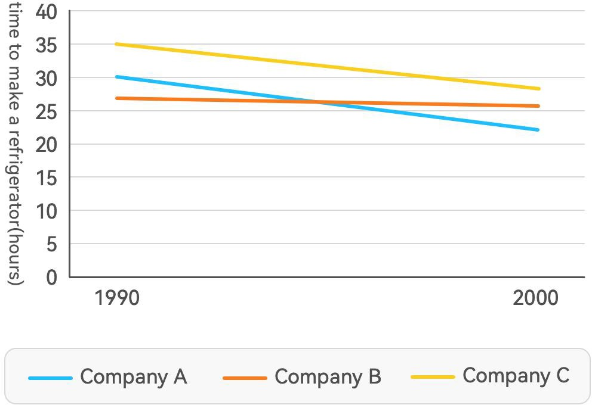
The provided line graph illustrates the production time required by three different companies to manufacture refrigerators from 1990 to 2000.
所提供的折线图显示了 1990 年至 2000 年三家不同公司制造冰箱所需的生产时间。
Overall, it is evident that all three companies witnessed a decline in the time needed to manufacture each refrigerator during this decade. Notably, Company C consistently had the longest production time, while Company A eventually outperformed Company B by the end of the period.
总体而言，很明显，在这十年中，这三家公司制造每台冰箱所需的时间都有所减少。值得注
意的是，公司 C 的生产时间一直最长，而公司 A 最终在这段时间结束时超过了公司 B。
As depicted in the graph, both Company A and Company C achieved substantial reductions in their manufacturing times. In 1990, Company C held the record for the longest production time, taking 35 hours to complete a single refrigerator. However, by 2000, this figure had dropped to under 30 hours. A similar trend is observed for Company A, with its manufacturing time decreasing from 30 hours in 1990 to nearly 22 hours in 2000.
如图所示，公司 A 和公司 C 的制造时间都大幅缩短了。1990 年，公司 C 保持了最长生产时间的记录，需要 35 小时才能完成一台冰箱。然而，到 2000 年，这个数字已经下降
到 30 小时以下。公司 A 也呈现出类似的趋势，其制造时间从 1990 年的 30 小时减少
到 2000 年的近 22 小时。
In contrast, the situation for Company B differed from the other two companies. Over the decade from 1990 to 2000, Company B's manufacturing time for refrigerators only experienced a marginal decrease, going from approximately 27 hours per unit to 25 hours per unit. While Company B initially led in efficiency in 1990, it was surpassed by Company A around 1995 and remained the company with the second shortest production time among the three throughout the period.
相比之下，公司 B 的情况与其他两家公司不同。从 1990 年到 2000 年的十年间，B 公
司冰箱的生产时间仅略有减少，从每台约 27 小时减少到每台 25 小时。虽然 B 公司在 1990 年的效率上处于领先地位，但在 1995 年左右被 A 公司超越，并且在整个时期内一直是三家公司中生产时间第二短的公司。
折线图 6:
The graph below shows the consumption of fish and some different kinds of meat in a European country between 1979 and 2004.
Summaries the information by selecting and reporting the main features, and make comparisons where relevant.
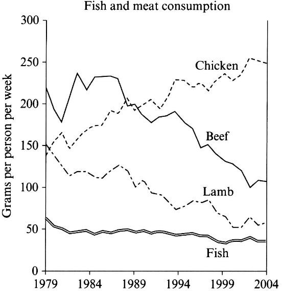
The line graph provides data on the consumption of various meats in a European country over a 25-year period from 1979 to 2004.
折线图提供了 1979 年至 2004 年 25 年间欧洲国家各种肉类消费的数据。
Overall, the data exhibits a clear shift in meat consumption preferences. Initially, beef was the most consumed meat type, but by the end of the period, chicken had become the predominant choice. While preferences for beef and lamb declined, fish consumption remained consistently stable.
总体而言，数据显示肉类消费偏好发生了明显变化。最初，牛肉是消费最多的肉类，但到该
时期末，鸡肉已成为主要选择。虽然对牛肉和羊肉的偏好有所下降，但鱼类消费量一直保持稳定。
Starting in 1979, beef consumption was the most consumed meat at around 220 grams per person per week but showed a consistent decline over the years, falling to just above 100 grams by 2004. In contrast, chicken consumption started from a lower base of around 145 grams and saw a significant increase, reaching nearly 250 grams by the end of the period, making it the most consumed meat by 2004.
从 1979 年开始，牛肉消费量是消费量最大的肉类，每人每周约 220 克，但多年来一直呈
持续下降趋势，到 2004 年降至略高于 100 克。相比之下，鸡肉消费量从较低的约 145 克
开始，并出现显着增长，到该时期结束时达到近 250 克，到 2004 年成为消费量最大的肉类。
The consumption of lamb displayed a gradual decline, starting from about 150 grams in 1979 to just over 50 grams in 2004. Fish consumption, while less dramatic in its fluctuations, remained relatively stable, beginning at about 60 grams and experiencing a slight decrease to around 40 grams by the end of the timeline.
羊肉消费量呈现逐渐下降趋势，从 1979 年的约 150 克开始下降到 2004 年的略高于 50
克。鱼类消费量波动较小，保持相对稳定，从约 60 克开始，到时间线结束时略有下降至
约 40 克。
类型 4: 表格
表格 1:
The table shows the number of people who took part in a national health survey between 2005 and 2009, answering questions about their sleeping habits.
Summarize the information by selecting and reporting the main features, and make comparisons where relevant.
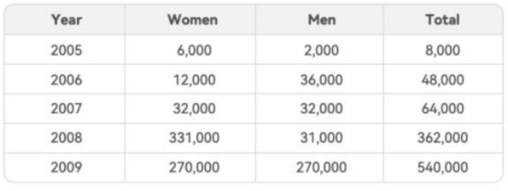
The table provides data on the responses from both men and women who took part in a questionnaire regarding their sleeping habits spanning the years 2005 to 2009.
表格提供了 2005 年至 2009 年期间参与睡眠习惯问卷调查的男性和女性的回答数据。
Overall, it is evident that the number of female respondents exceeded that of male respondents throughout the period, except for a brief instance in 2006 when the trend momentarily reversed. Notably, the survey's participation rate displayed a consistent upward trajectory over the years.
总体而言，很明显，整个时期女性受访者的数量都超过了男性受访者，除了 2006 年短暂
的趋势逆转之外。值得注意的是，调查的参与率多年来一直呈上升趋势。
In 2005, a total of 8,000 individuals engaged in the survey. Among these, only 2,000 were men, while the remaining 6,000 were women. The following year, 2006, witnessed a significant surge in overall survey participation, with a total of 48,000 respondents. Within this group, 12,000 were women, accounting for a quarter of the total, and the remaining 36,000 were men. It is important to note that 2006 marked the only year when men's participation momentarily outpaced that of women. Subsequently, 2007 saw an increase in female participation, nearly tripling to 32,000, while the number of male participants experienced its first drop, leveling with female participation.
2005 年，共有 8,000 人参与了调查。其中，只有 2,000 人是男性，其余 6,000 人是女
性。第二年，即 2006 年，调查总体参与人数大幅增加，共有 48,000 名受访者。其中 12,000人是女性，占总数的四分之一，其余 36,000 人是男性。值得注意的是，2006 年是男性参与率暂时超过女性的唯一一年。随后，2007 年女性参与人数增加近三倍，达到 32,000 人，而男性参与人数首次出现下降，与女性参与人数持平。
The year 2008 witnessed a total of 362,000 participants. This growth was primarily driven by a significant increase in female respondents, reaching 331,000, which was more than tenfold the number in the previous year. Meanwhile, the number of male participants dwindled to 31,000, indicating a decline from the preceding year. In 2009, while the number of female respondents experienced a marginal decrease, the overall survey participation continued to escalate compared to the previous year, largely due to a surge in male respondents. Remarkably, in 2009, the survey achieved gender parity again, with an equal number of male and female participants, each totaling 270,000 respondents.
2008 年共有 362,000 名参与者。这一增长主要得益于女性受访者的大幅增加，达到
331,000 人，是上一年的十倍多。与此同时，男性参与者的数量减少到 31,000 人，表明比上一年有所下降。2009 年，虽然女性受访者的数量略有下降，但总体调查参与人数与上一年相比继续上升，这主要是由于男性受访者人数激增。值得注意的是，2009 年，调查再次实现了性别平等，男女参与者人数相等，各有 270,000 名受访者。
表格 2:
The table below gives information about a bakery's average sales in three different branches in 2015.
Summarize the information by selecting and reporting the main features, and make comparisons where relevant.
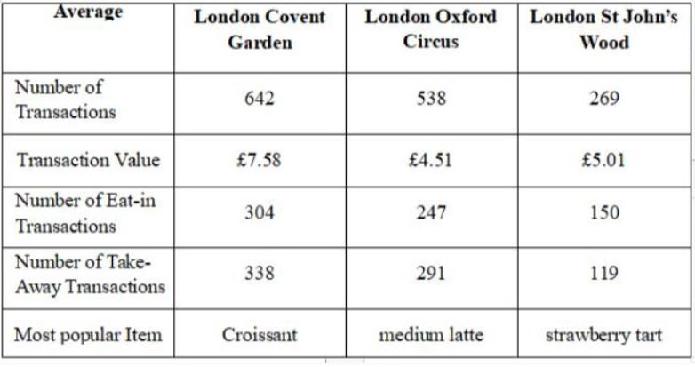
The provided table illustrates the performance of three distinct branches of a bakery chain situated in different areas of London during the year 2015.
提供的表格显示了 2015 年位于伦敦不同地区的一家面包连锁店的三个不同分店的业绩。
Overall, the Covent Garden branch emerges as the most profitable store within the company, boasting the highest transaction numbers and average transaction value. Conversely, St John's Wood significantly lags behind, though it surpasses Oxford Circus marginally in average transaction value. Additionally, while eat-in and takeaway preferences are evenly split in three locations, St John's Wood demonstrates a distinct preference for eat-in deals.
总体而言，考文特花园分店成为公司内最赚钱的门店，拥有最高的交易数量和平均交易价值。
相反，圣约翰伍德分店明显落后，尽管其平均交易价值略高于牛津广场分店。此外，虽然三个地点的堂食和外卖偏好各占一半，但圣约翰伍德分店明显偏爱堂食交易。
Examining the transaction volumes, Covent Garden excels with an average of 642 transactions per day, surpassing Oxford Circus by at least 100 transactions and more than doubling St John's Wood's figures. The average transaction value further strengthens Covent Garden's dominance, standing at £7.58, compared to Oxford
Circus's £4.51 and St John's Wood's £5.01.
从交易量来看，考文特花园分店以平均每天 642 笔交易的优势脱颖而出，比牛津广场分店
多出至少 100 笔交易，是圣约翰伍德分店的两倍多。平均交易价值进一步巩固了考文特花
园的主导地位，达到 7.58 英镑，而牛津广场分店为 4.51 英镑，圣约翰伍德分店为 5.01 英镑。
On average, dine-in and takeaway transactions are nearly balanced across all branches, with the exception of St John's Wood, which records 31 more dine-in transactions than takeaways. Customer preferences in each district vary significantly. In Covent Garden, croissants emerge as the bestseller, while latte holds the preference in Oxford Circus, and St John's Wood customers favor strawberry tarts.
平均而言，所有分店的堂食和外卖交易几乎持平，但圣约翰伍德分店除外，该分店的堂食交易比外卖多 31 笔。每个地区的顾客偏好差异很大。在科文特花园，羊角面包成为畅销品，而牛津广场则偏爱拿铁，圣约翰伍德的顾客则偏爱草莓馅饼。
类型 5: 复合图表
复合图表 1:
The chart below shows the value of one country's exports in various categories during 2015 and 2016. The table shows the percentage change in each category of exports in 2016 compared with 2015.
Summarise the information by selecting and reporting the main features, and make comparisons where relevant.
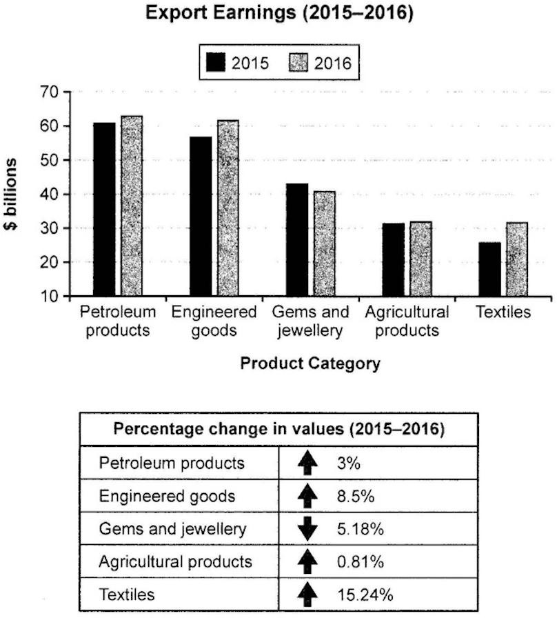
The bar chart outlines the export earnings of a country across various product categories for the years 2015 and 2016, along with the table indicating year-on-year percentage change for each category.
条形图概述了 2015 年和 2016 年一个国家各产品类别的出口收入，并附有表格，显示每
个类别的同比百分比变化。
Overall, while petroleum products and engineered goods contributed the highest to export earnings in both years, textiles exhibited the most significant positive change in value. In contrast, gems and jewellery was the only category to experience a decrease in export earnings between 2015 and 2016.
总体而言，虽然石油产品和工程产品在这两年对出口收入的贡献最大，但纺织品的价值正变
化最为显著。相比之下，宝石和珠宝是 2015 年至 2016 年之间唯一出口收入下降的类别。
It is apparent from the bar chart that petroleum products dominated the export earnings for both years, recording figures of $60 billion in 2015 and a slight increase to about $62 billion in 2016. Engineered goods followed, with earnings close to $55 billion in 2015, which rose to approximately $61 billion the subsequent year.
从条形图中可以看出，石油产品在这两年的出口收入中占据主导地位，2015 年录得 600 亿
美元，2016 年略有增加，约为 620 亿美元。紧随其后的是工程产品，2015 年的收入接近 550 亿美元，次年上升至约 610 亿美元。
Agricultural products showed a relatively stable earning with a minor increase from about
$31 billion in 2015 to a figure just above this in 2016. Conversely, gems and jewellery experienced a decline, with earnings decreasing from around $42 billion in 2015 to below this in 2016. Textiles saw a notable rise from just under $30 billion in 2015 to above this mark in 2016.
农产品的收益相对稳定，从 2015 年的约 310 亿美元小幅增加到 2016 年的略高于这一
数字。相反，宝石和珠宝经历了下滑，收益从 2015 年的约 420 亿美元下降到 2016 年
的低于这一数字。纺织品从 2015 年的略低于 300 亿美元显着上升到 2016 年的这一水平以上。
The table provides further insight, revealing a 3% growth in petroleum products and an 8.5% increase in engineered goods. The gems and jewellery sector suffered a decline of 5.18%, making it the only category to witness a decrease. Agricultural products had a marginal growth of 0.81%. The textile sector stood out with a substantial increase of 15.24%, indicating a significant boost in its export value.
该表提供了进一步的见解，显示石油产品增长了 3%，工程产品增长了 8.5%。宝石和珠宝
行业下降了 5.18%，成为唯一出现下降的类别。农产品小幅增长了 0.81%。纺织业表现突出，大幅增长了 15.24%，表明其出口额大幅提升。
复合图表 2:
The table and charts below give information on the police budget for 2017 and 2018 in one area of Britain. The table shows where the money came from, and the charts show how it was distributed.
Summarise the information by selecting and reporting the main features, and making relevant comparisons.
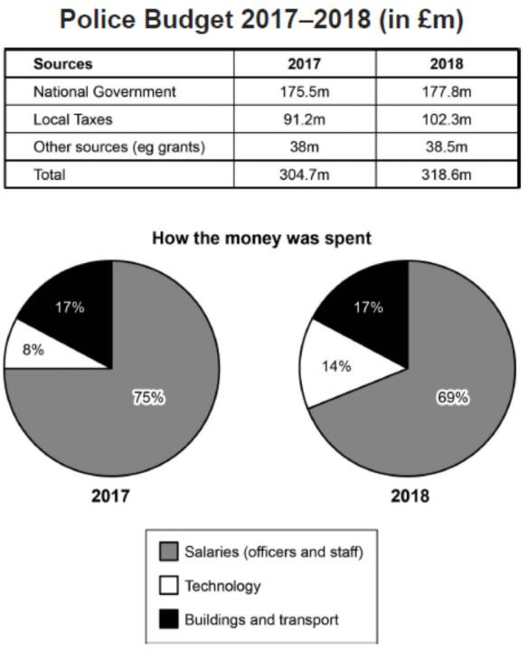
The provided table offers a comprehensive overview of the police budget in Britain across the years 2017 and 2018. The corresponding pie charts offer detailed insights into the allocation of funds for various expenditure categories during these two years.
所提供的表格全面概述了 2017 年和 2018 年英国的警察预算。相应的饼图详细介绍了这
两年各支出类别的资金分配情况。
Overall, the police budget for 2018 surpassed that of 2017, a variance attributed predominantly to the augmentation in funding derived from local taxes. Furthermore, in 2018, a portion of the allocation previously dedicated to payroll expenditures in the preceding year was redirected toward enhancing police equipment and technological infrastructure.
总体而言，2018 年的警察预算超过了 2017 年，这一差异主要归因于地方税收资金的增加。
此外，2018 年，前一年用于工资支出的部分拨款被重新用于加强警察设备和技术基础设施。
The proportion of the police budget funded by the national government witnessed a marginal increment from £175.5 million in 2017 to £177.8 million in 2018. Conversely, the contribution stemming from local tax revenue witnessed a substantial surge, manifesting as a noteworthy increase of £11.1 million compared to the funding in 2017. Funds from other sources experienced a slight growth, reaching £500,000.
由国家政府资助的警察预算比例从 2017 年的 1.755 亿英镑小幅增加到 2018 年的
1.778 亿英镑。相反，来自地方税收的贡献大幅增加，与 2017 年的资金相比，显著增加
了 1110 万英镑。来自其他来源的资金略有增长，达到 50 万英镑。
Upon the distribution of expenditures within the police budget, the share directed towards construction and transportation remained consistent over the two years, each accounting for 17% of the allocation. Remarkably, expenditure allocated for technology and police gear experienced a marked uptick of 6% between 2017 and 2018. In stark contrast, while it remained the most significant output, the portion allocated for payroll experienced a notable decline of 6%.
在警察预算的支出分配方面，用于建设和交通运输的份额在两年中保持一致，各占拨款的
17%。值得注意的是，分配给技术和警用装备的支出在 2017 年至 2018 年期间显著上升了 6%。与此形成鲜明对比的是，虽然它仍然是最重要的产出，但分配给工资的部分却显著下降了 6%。
复合图表 3:
The charts below show the changes in ownership of electrical appliances and amount of time spent doing housework in households in one country between 1920 and 2019.
Summarise the information by selecting and reporting the main features, and make comparisons where relevant.
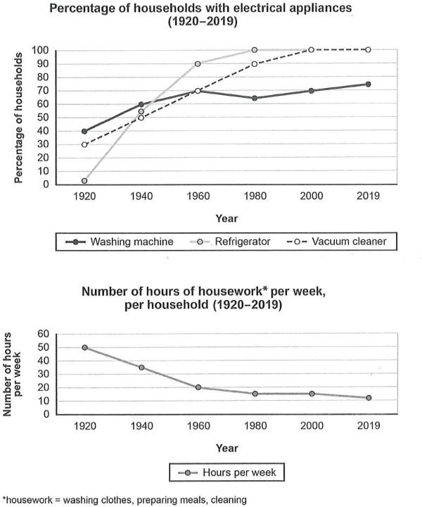
The two graphs provide a comprehensive overview of the trends in ownership of household appliances and the weekly time spent on housework in a country over a century from 1920 to 2019.
这两张图表全面概述了 1920 年至 2019 年一个多世纪以来一个国家家用电器拥有量和每
周家务时间的趋势。
Overall, the data reflects a significant transition in household management within the country, with a steep rise in appliance ownership and a corresponding decrease in hours spent on housework.
总之，这些数据反映了该国家庭管理的重大转变，家电拥有量急剧上升，而花在做家务上的
时间则相应减少。
The first graph reveals a marked increase in the ownership of electrical appliances. In 1920, washing machines were present in less than 40% of households. This figure rose steadily to reach a peak of approximately 80% by 1960 before experiencing a slight decline and stabilizing at around 70% by the end of the period. Refrigerators saw a significant surge from almost non-existent in 1920 to being in nearly 100% of homes by the 2000s. Vacuum cleaners displayed the most consistent growth, starting from about 30% in 1920 and ascending steadily to 100% ownership by 2000.
第一张图表显示电器拥有量显着增加。1920 年，洗衣机在不到 40% 的家庭中存在。这一
数字稳步上升，到 1960 年达到约 80% 的峰值，随后略有下降，到该时期末稳定在 70%
左右。冰箱从 1920 年几乎不存在到 2000 年代几乎 100% 的家庭中出现了显着增长。
吸尘器显示出最稳定的增长，从 1920 年的约 30% 开始，到 2000 年稳步上升到 100%
的拥有量。
Simultaneously, the second graph shows a drastic reduction in the time dedicated to housework. In 1920, households spent approximately 50 hours a week on housework. This figure dropped sharply to around 20 hours by 1960. The subsequent years witnessed a more gradual decline, leading to an average of just 10 hours per week by 2019.
同时，第二张图表显示用于家务的时间急剧减少。 1920 年，家庭每周花在做家务上的时
间约为 50 小时。到 1960 年，这一数字急剧下降到 20 小时左右。随后几年，这一数字
逐渐下降，到 2019 年，平均每周只有 10 小时。
类型 6: 地图题
地图题 1:
The maps below show the centre of a small town called Islip as it is now and plans for its development.
Summarise the information by selecting and reporting the main features, and make comparisons where relevant.
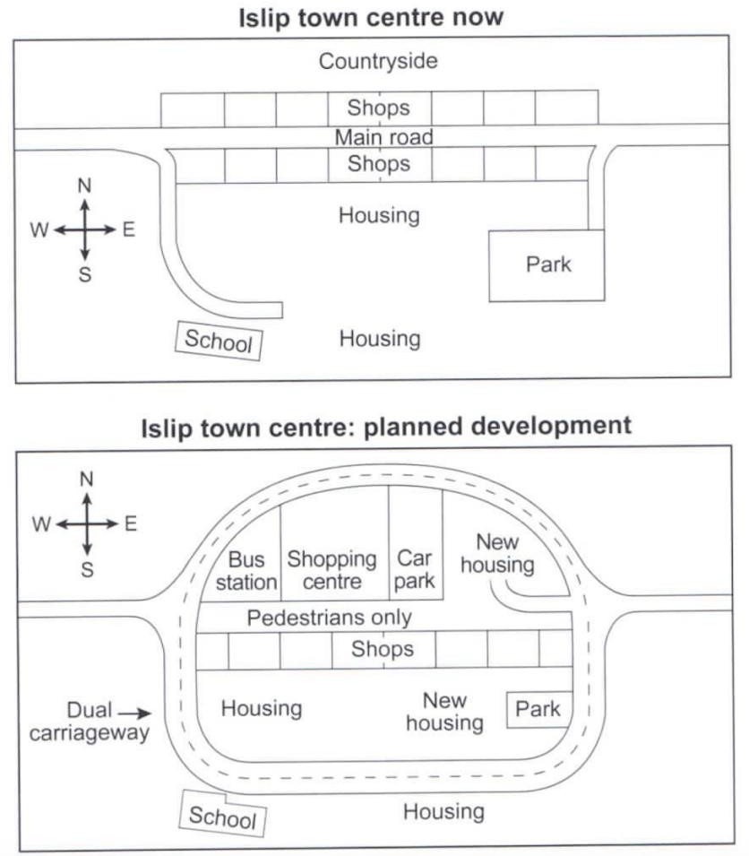
The maps present the current layout of Islip town center and its proposed redevelopment.
地图展示了艾斯利普镇中心的当前布局及其拟议的重建。
Overall, the future plans for Islip town center involve the reorganization of housing, the introduction of new commercial and transport facilities, and the improvement of road infrastructure, significantly altering the current layout and potentially improving the functionality of the town center.
总体而言，艾斯利普镇中心的未来计划涉及住房重组、引入新的商业和交通设施以及道路基
础设施的改善，这将显著改变目前的布局并可能改善镇中心的功能。
Currently, Islip's town center is characterized by a set of housing areas located to the south with a park situated to the southeast. In the southwest corner lies a school, adjacent to a curved road. To the north of the housing, is a shopping area arranged along the main road, and to the north of the town is the countryside.
目前，艾斯利普镇中心的特点是南面是一组住宅区，东南面是公园。西南角是一所学校，毗
邻一条弯曲的道路。 住房北面是沿主干道布置的购物区，镇北面是乡村。
The planned development of Islip indicates a series of changes. This includes the reconstruction of a dual carriageway along the existing road, circling around the main area, while the central part of the original main road is designated for pedestrian use. While the school will retain its position, the shops on the north of the pedestrian road will undergo a relocation. Additionally, the park in the southeast will also see reconstruction to a smaller one.
艾斯利普的规划发展表明了一系列变化。 这包括沿着现有道路重建一条双车道，环绕主要
区域，而原主干道的中央部分则指定为行人使用。 虽然学校将保留其位置，但步行道北面的商店将进行搬迁。 此外，东南部的公园也将改建成一个较小的公园。
The layout will be modified to include two new housing areas: one replacing part of the current southern housing and another new residential area to the northeast, replacing the shops. Furthermore, a new car park and shopping center will be established to the west of the new northern housing. Another significant addition is the construction of a bus station to the west of the shopping center.
布局将进行修改，包括两个新住宅区：一个取代目前南部住宅的一部分，另一个位于东北部
的新住宅区取代商店。此外，新的北部住宅西侧将建立一个新的停车场和购物中心。另一个重要的新增项目是在购物中心西侧建造一个公交车站。
地图题 2:
The two maps below show road access to a city hospital in 2007 and in 2010.
Summarize the information by selecting and reporting the main features, and make comparisons where relevant.
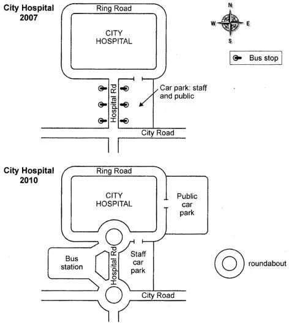
The maps illustrate the changes in road access to the City Hospital between 2007 and 2010.
地图显示了 2007 年至 2010 年期间通往市医院的道路变化。
Overall, the changes implemented by 2010 reflect a significant improvement in the City Hospital's accessibility. The introduction of a roundabout, a bus station, and segregated parking areas would likely have contributed to better traffic management and more efficient access for staff, patients, and visitors alike.
总体而言，截至 2010 年实施的变更反映了市医院可达性的显著改善。引入环形交叉路口、
公交车站和隔离停车区可能会有助于改善交通管理，并提高工作人员、患者和访客的出入效率。
In 2007, the City Hospital was accessible via Hospital Road, which connected to the City Road and a Ring Road that enclosed the hospital grounds. There was a shared car park for staff and the public on the hospital premises, situated on the southeast of the Hospital and has a gate on its north. Additionally, bus stops were located just outside the hospital on Hospital Road.
2007 年，可通过医院路到达市医院，该路与市路和环绕医院场地的环路相连。医院内设有
供工作人员和公众使用的共用停车场，位于医院东南方向，北面设有大门。此外，医院路的医院外就设有公交车站。
Three years later, in 2010, there were considerable changes in the infrastructure around the City Hospital. The most notable development was the introduction of roundabouts on the junctions of these roads. The bus stops were relocated to a new bus station on Hospital Road. Moreover, the parking facilities underwent reorganization. Separate car parks were designated for staff and the public, with the public car park positioned close to the Ring Road. The staff car park was located in the replaced car park in 2007, adjacent to the bus station, suggesting a streamlined approach for hospital staff commuting by car or bus.
三年后，即 2010 年，市医院周围的基础设施发生了重大变化。最显著的变化是在这些道
路的交叉口引入了环形交叉路口。公交车站被搬迁到医院路上的新公交车站。此外，停车设施也进行了重组。医院为员工和公众设立了单独的停车场，公共停车场位于环路附近。员工停车场位于 2007 年更换的停车场内，毗邻公交车站，为乘坐汽车或公交车上下班的医院工作人员提供了简化的交通方式。
地图题 3:
The plans below show the site of an airport now and how it will look after redevelopment next year.
Summarise the information by selecting and reporting the main features, and make comparisons where relevant.
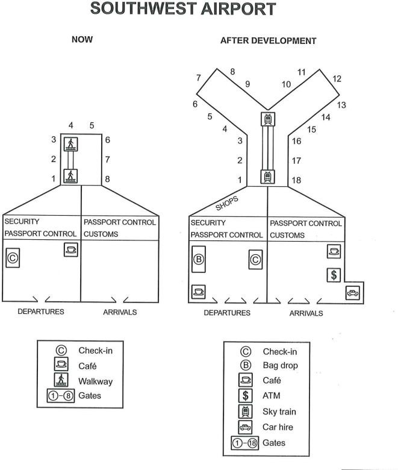
The diagrams present the current layout of the Southwest Airport and its design proposal after renovation next year.
这些图表展示了西南机场目前的布局和明年改造后的设计方案。
Overall, significant changes are expected at the Southwest Airport next year, including an expansion of the facilities. However, the security passport control and passport control customs will remain unchanged. Additionally, new amenities such as a cafe, ATM, Sky train, car hire services, shops, and a bag drop facility will be added.
总体而言，西南机场明年预计将发生重大变化，包括设施扩建。但是，安全护照检查和护照
检查海关将保持不变。此外，还将增加新的便利设施，如咖啡馆、自动取款机、空中列车、汽车租赁服务、商店和行李托运设施。
The proposed redevelopment will transform the gate area arrangement into a 'Y' shape, significantly increasing the number of gates from 8 to 18. This expansion is complemented by the introduction of a sky train system, which will provide transit along the central axis in the boarding area, replacing the current walkway. Additionally, retail shops are planned to occupy the space between the gates and the security passport control area, offering travelers more amenities.
拟议的重建将把登机口区域布置成“Y”形，登机口数量将从 8 个大幅增加到 18 个。空
中列车系统的引入补充了这一扩建，该系统将提供沿登机区中轴线的交通，取代目前的人行道。此外，零售商店计划占据登机口和安全护照检查区之间的空间，为旅客提供更多便利设施。
The central part of the airport, comprising security, passport control, and customs, remains unchanged in its sequence of processes. However, the departures will include a bag drop service, while an existing cafe will be relocated to the left side near the departures. The arrivals will have a café and additional amenities such as an ATM, and car hire services will be introduced. Meanwhile, the entrance areas for both departures and arrivals are to be expanded, with an additional entrance for each.
机场的中心部分包括安检、护照检查和海关，其流程顺序保持不变。但是，出发区将包括行
李托运服务，而现有的咖啡馆将搬迁到出发区附近的左侧。到达大厅将设有咖啡厅和 ATM等额外设施，并将推出租车服务。同时，出发和到达的入口区域都将扩大，每个入口都增加一个。
地图题 4:
The maps below show an industrial area in the town of Norbiton and planned future development of the site.
Summarise the information by selectingand reporting the main features, and make comparisons where relevant.
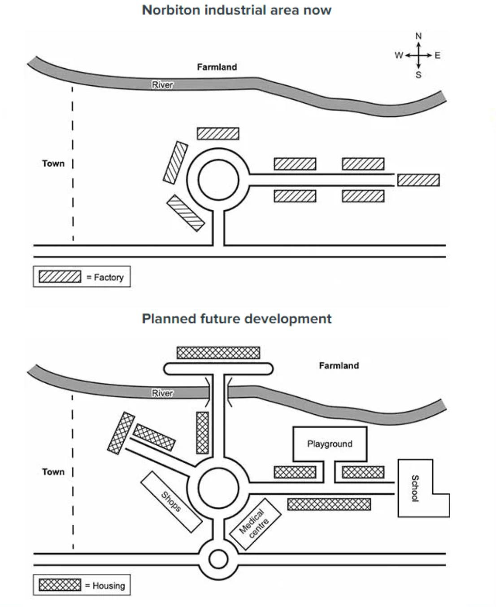
The maps illustrate the present industrial zones adjacent to Norbiton and outline future redevelopment projects.
这些地图展示了诺比顿附近的现有工业区，并概述了未来的重建项目。
Overall, this redevelopment plan aims to replace the current factories with housing and other essential facilities.
总体而言，这项重建计划旨在用住房和其他基本设施取代现有工厂。
The current layout features the Norbiton Industrial Estate, which is accessible via a ring road connected to the road on the south. These factories will be demolished to make way for the proposed residential and infrastructural enhancements. As part of the redevelopment, a smaller roundabout is to be constructed along the existing southern route. Between this new roundabout and the existing one, plans include the establishment of shops and a medical center.
目前的布局以诺比顿工业区为特色，可通过与南部道路相连的环形公路进入。这些工厂将被
拆除，为拟议的住宅和基础设施改善让路。作为重建的一部分，将沿着现有的南部路线修建一个较小的环形交叉路口。在这个新的环形交叉路口和现有的环形交叉路口之间，计划包括建立商店和医疗中心。
The eastern road, currently serving the industrial estate, is slated for conversion into a residential area. The plan includes a school positioned at the end of the road, complemented by a newly constructed playground to its north.
目前服务于工业区的东路计划改建为住宅区。该计划包括位于道路尽头的一所学校，并在其
北面新建一个操场。
Furthermore, the proposal details the construction of a bridge and road across the river to the north, extending from the original roundabout, with housing developments planned along the western side of this new road. The farmland on the north of the river is also earmarked for conversion into additional residential units, accompanied by a parallel road to the river, enhancing accessibility and linking the community. A supplementary road is envisioned to the northwest of the roundabout, where further housing will be developed.
此外，该提案详细说明了从原来的环形交叉路口向北修建一座横跨河流的桥梁和道路，并计
划在这条新路的西侧进行住宅开发。河流北侧的农田也计划改建为额外的住宅单元，并修建一条与河流平行的道路，以提高可达性并连接社区。环岛西北方向预计将修建一条补充道路，将 在那里开发更多的住房。
地图题 5:
The maps below show Harrison'sStables in 1920 and in 2010.
Summarize the information by selecting and reporting the main features, and make comparisons where relevant.
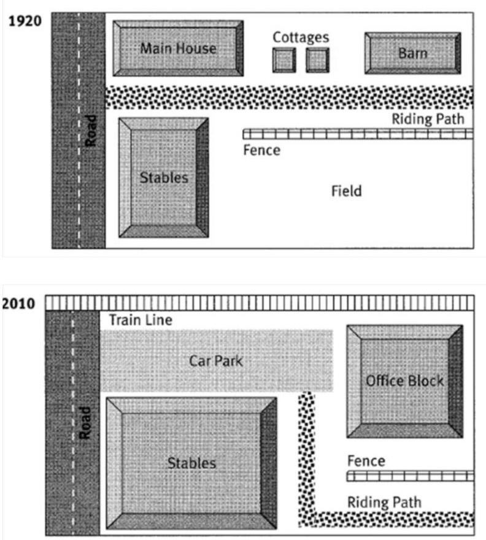
The provided maps show the transformation of Harrison Stables in 1920 and after its reconstruction in 2010.
提供的地图展示了哈里森马厩在 1920 年和 2010 年重建后的变迁。
Overall, a number of changes have happened over the years, notably featuring the expansion of the stables, the complete disappearance of the fields, and the replacement of the main house with a parking lot. Moreover, there were enhancements in transportation accessibility and an elevated level of modernization in 2010.
总体而言，多年来发生了许多变化，特别是马厩的扩建、田地的完全消失以及主屋被停车场
取代。此外，2010 年交通便利性得到改善，现代化程度也得到提升。
In 1920, the central structures, including the main building, two cottages, and a barn, were situated in the northern section of the map. By 2010, the barn was reconstructed into a contemporary office block, while the main building and cottages were transformed into parking lots, aiming to fulfill the increased numbers of visitors arriving by car. In addition, a new train line was established in the north, augmenting the diversity of transportation options available.
1920 年，中央建筑，包括主楼、两间小屋和一间谷仓，位于地图的北部。到 2010 年，谷
仓被改建为一座现代办公大楼，而主楼和小屋则被改造成停车场，旨在满足越来越多的自驾游客的需求。此外，北部还建立了一条新的火车线，增加了交通选择的多样性。
In 2010, there was a significant expansion of the stables in the south, doubling their original size. The riding trail, formerly used to separate the northern and southern regions in 1920, was relocated to a field in the south and seamlessly connected with the newly constructed parking lot. The original fence was also moved to the south, aligning with the riding path and being shortened, contributing to an optimized spatial arrangement.
2010 年，南部的马厩进行了大规模扩建，面积扩大了一倍。 1920 年起，公园划分南北的
骑行道被移至南侧的空地，与新建的停车场无缝衔接；原有的围栏也向南移动，与骑行道对齐，长度缩短，优化了空间布局。
地图题 6:
The plans show information about the first floor of a library in 1998 and the same area now.
Summarize the information by selecting and reporting the main features, and make comparisons where relevant.
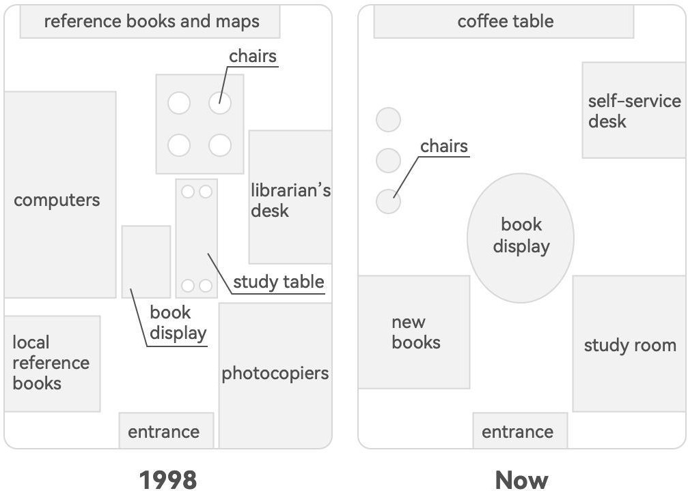
The provided illustrations detail the modifications in the layout of the library's first floor, contrasting the design as it was in 1998 with its current configuration.
提供的插图详细描述了图书馆一楼布局的修改，对比了 1998 年的设计与当前的配置。
Overall, there are notable alterations in the arrangement of various zones within the library, while the entrance remains unchanged.
总体而言，图书馆内各个区域的布局都有显著的改变，而入口保持不变。
The most striking transformation since 1998 is the repositioning and enhancement of certain elements. The study tables that were once a prominent feature have been completely removed, making way for an expanded, circular book display area. Additionally, the four chairs adjacent to the computer section have now been reduced to three and relocated to the left flank of the first floor, supplanting the former computer area.
自 1998 年以来，最引人注目的转变是某些元素的重新定位和增强。曾经是主要特色的书桌已被完全移除，为扩大的圆形图书展示区让路。此外，毗邻计算机部分的四把椅子现在已减少到三把，并重新安置在一楼的左侧，取代了以前的计算机区域。
Moreover, the segment that formerly hosted local reference books, situated to the left upon entering, is now dedicated to new books. The photocopier that was previously to the right of the entrance has given way to a new study room. Furthermore, the librarian’ s desk, positioned further within the room, has undergone a transformation into a self-service desk. The area was designated for reference books and maps has been converted into a space with a coffee table. Remarkably, amidst these numerous changes, the entrance remains as it was, serving as a familiar gateway to this library.
此外，以前存放当地参考书的区域位于入口左侧，现在专门用于存放新书。以前位于入口右
侧的复印机已让位于新的自习室。此外，位于房间更深处的图书管理员办公桌已转变为自助服务台。该区域原本用于存放参考书和地图，现已改建为带咖啡桌的空间。值得注意的是，在经历了众多变化之后，入口却依然保持原样，成为这座图书馆熟悉的门户。
类型 7: 流程图
流程图 1:
The diagram below shows how geothermal energy is used to produce electricity.
Summarise the information by selecting and reporting the main features, and make comparisons where relevant.
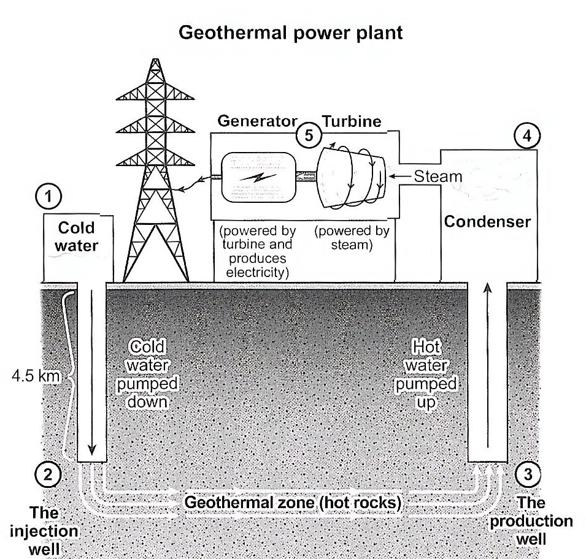
The diagram illustrates the stages involved in generating electricity from geothermal energy.
该图说明了利用地热能发电的各个阶段。
Overall, this geothermal power plant functions by transforming subsurface heat into usable electricity through a multi-step process. The process begins with the injection of cold water into an underground geothermal zone with hot rocks and concludes with electricity production.
总体而言，该地热发电厂通过多步骤过程将地下热量转化为可用电能。该过程从将冷水注入
具有热岩的地下地热区开始，最后产生电力。
Initially, cold water is sent down through the injection well to a depth of 4.5 kilometers. When the water reaches the geothermal zone, it is heated by the naturally occurring geothermal energy from the hot rocks. Subsequently, the now-hot water is pumped up through the production well towards the surface.
最初，冷水通过注入井输送到 4.5 公里深处。当水到达地热区时，它会被热岩中自然产生
的地热能加热。随后，现在变热的水通过生产井向上泵送到地面。
Upon reaching the top, the heated water turns into steam as it enters the condenser. The steam then propels the turbine, which is linked to a generator. The motion of the turbine powers the generator, resulting in the production of electricity. The generated electricity is ultimately distributed for use.
到达顶部后，加热的水进入冷凝器时变成蒸汽。然后蒸汽推动涡轮机，涡轮机与发电机相连。
涡轮机的运动为发电机提供动力，从而产生电力。产生的电力最终被分配使用。
流程图 2:
The diagram below shows the manufacturing process for making sugar from sugar cane.
Summarise the information by selecting and reporting the main features, and make comparisons where relevant.
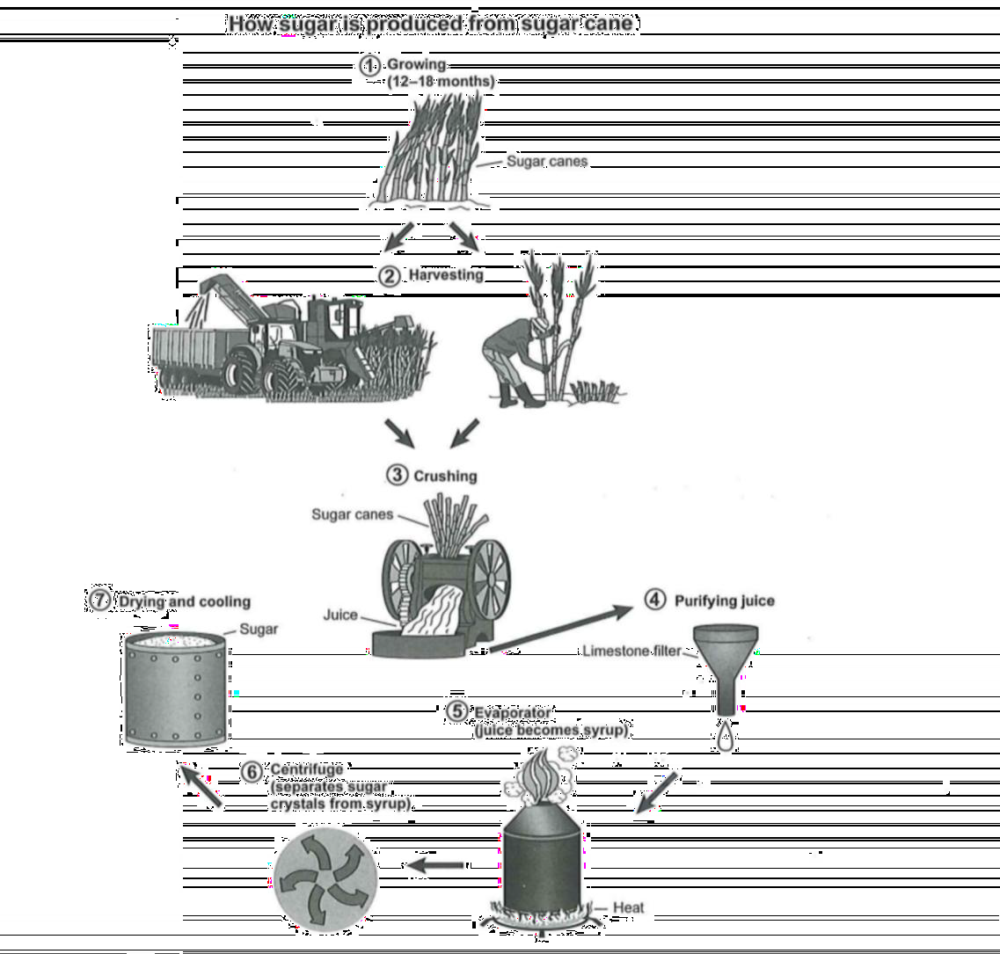
The diagram outlines the process of producing sugar from sugar cane through seven key stages.
该图概述了通过七个关键阶段从甘蔗生产糖的过程。
Overall, the manufacturing of sugar from sugar cane involves a sequential process that includes growth, harvest, crushing, purification, evaporation, centrifuge, and finally, the drying and cooling of sugar crystals.
总体而言，用甘蔗生产糖涉及一个连续的过程，包括生长、收获、压碎、净化、蒸发、离心，
最后是糖晶体的干燥和冷却。
The production begins with the growth of sugar canes, which mature over a period of 12 to 18 months. Once matured, the canes are harvested using either manual labor, where workers cut the canes at the roots, or mechanical harvesters that cut and collect the canes simultaneously.
生产始于甘蔗的生长，成熟期为 12 至 18 个月。成熟后，甘蔗通过人工收割，工人从根
部砍伐甘蔗，或使用机械收割机同时收割和收集甘蔗。
Following harvest, the canes undergo crushing where a machine extracts the juice into a container. This extracted juice is then transferred through a limestone filter to purify it. Next, the purified juice is moved into an evaporator, where it is heated until water evaporates, concentrating the juice into syrup. The syrup then enters a centrifuge, where, through rapid anti-clockwise rotation, sugar crystals are separated from the syrup. In the final stage, the sugar crystals are collected, dried, and cooled.
收获后，甘蔗经过压碎，机器将汁液榨入容器中。然后将提取的汁液通过石灰石过滤器进行
净化。接下来，将净化后的汁液移入蒸发器，加热直至水分蒸发，将汁液浓缩成糖浆。然后糖浆进入离心机，通过快速逆时针旋转，将糖晶体与糖浆分离。在最后阶段，收集、干燥和冷却糖晶体。
流程图 3:
The diagram below shows how instant noodles are manufactured.
Summarise the information by selecting and reporting the main features, and make comparisons where relevant.
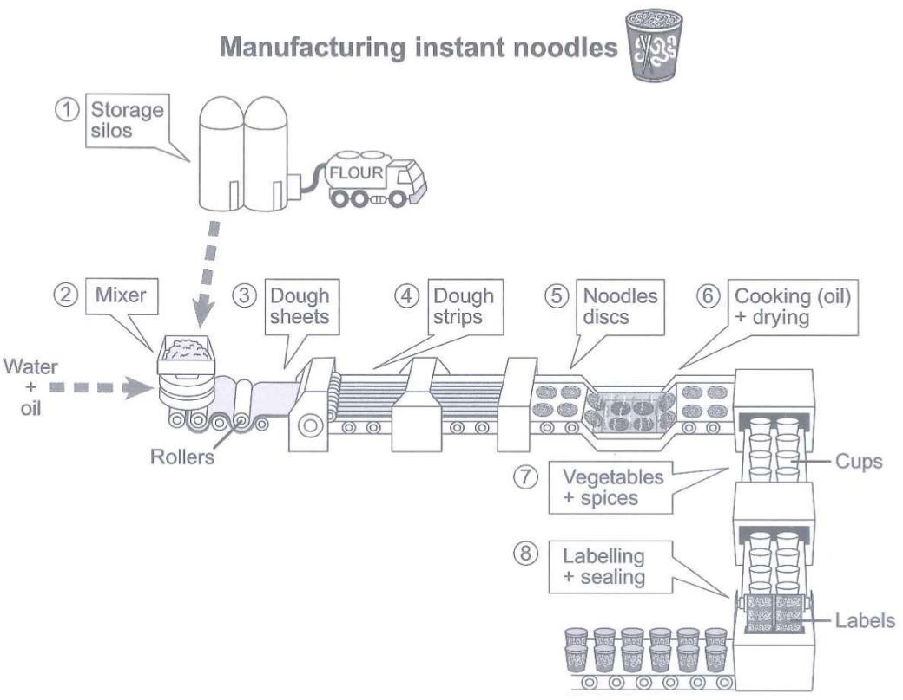
The diagram illustrates the process of manufacturing instant noodles.
该图说明了方便面的生产过程。
Overall, the manufacturing process of instant noodles encompasses eight distinct stages, with the key phases including the storage of ingredients in silos, the blending with water and oil, dough preparation, cooking, drying, and the final labelling and sealing.
总体而言，方便面的生产过程包括八个不同的阶段，关键阶段包括将原料储存在筒仓中、与
水和油混合、面团准备、烹饪、干燥以及最终贴标签和密封。
Initially, flour is delivered to storage silos by trucks, setting the stage for production. The manufacturing process commences when flour is mixed with water and oil in a mixer. This mixture is then passed through rollers to create flat dough sheets, which will be cut into strips before being molded into noodle discs.
首先，面粉通过卡车运送到储藏筒仓，为生产做好准备。制造过程从将面粉与水和油在搅拌
机中混合开始。然后，该混合物通过滚筒制成扁平的面团片，面团片将被切成条状，然后模制成面片。
Subsequently, these noodle discs are then cooked in oil and dried, solidifying their texture. Following the cooking phase, the noodles are placed into individual cups, to which an assortment of vegetables and spices are added, enhancing flavor and nutritional value.
随后，这些面片在油中煮熟并干燥，使其质地凝固。烹饪阶段之后，将面条放入单独的杯子
中，加入各种蔬菜和香料，以增强风味和营养价值。
The final stages involve packaging, where the cups are first labeled with product information and then sealed to maintain freshness. Once labeled and sealed, the final products, instant noodles, are ready.
最后阶段涉及包装，首先在杯子上贴上产品信息标签，然后密封以保持新鲜度。贴上标签并
密封后，最终产品——方便面就准备好了。
流程图 4:
The diagram below shows the process for recycling plastic bottles.
Summarise the information by selecting and reporting the main features, and make comparisons where relevant.
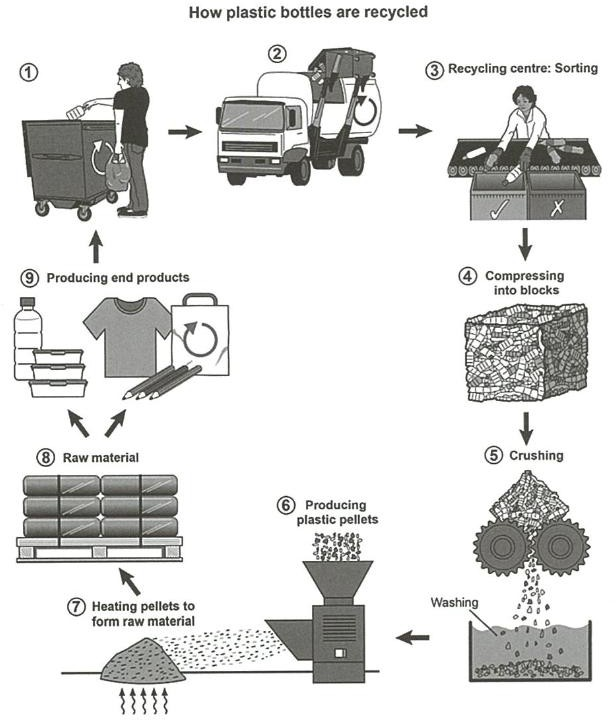
The diagram illustrates the intricate process of recycling plastic bottles, which involves a series of methodical steps to transform used bottles into reusable materials and new products.
该图说明了塑料瓶回收的复杂过程，该过程涉及一系列有条不紊的步骤，将旧瓶子转化为可
重复使用的材料和新产品。
Overall, the recycling of plastic bottles is a comprehensive nine-step process that transitions from collection to sorting, processing, and ultimately, to the manufacturing of new products. Notably, the procedure is cyclical, with the final products potentially re-entering the recycling chain, underscoring the sustainable nature of this environmentally conscious practice.
总体而言，塑料瓶回收是一个全面的九步过程，从收集到分类、加工，最后到制造新产品。
值得注意的是，这个过程是循环的，最终产品可能会重新进入回收链，强调这种环保做法的可持续性。
Initially, individuals participate in the recycling effort by placing their used bottles into designated recycling bins. These bins are subsequently emptied into recycling trucks that transport the discarded bottles to a specialized sorting facility. Here, workers segregate the bottles into 2 different categories, those that do not meet the standards are discarded, and those that meet the standards enter the next phase of processing.
最初，个人通过将旧瓶子放入指定的回收箱来参与回收工作。这些箱子随后被倒入回收卡车，
将废弃的瓶子运送到专门的分类设施。在这里，工人将瓶子分为两类，不符合标准的瓶子被丢弃，符合标准的瓶子进入下一阶段的加工。
Once sorted, the bottles undergo compaction into dense blocks, which not only reduces the volume but also facilitates the subsequent crushing process. These compacted blocks are then crushed into smaller fragments, which are meticulously washed to remove contaminants, ensuring the purity of the recycled material.
分类后，瓶子被压缩成致密的块，这不仅减少了体积，还便于后续的粉碎过程。然后将这些
压实的块状物压碎成较小的碎片，并仔细清洗以去除污染物，确保回收材料的纯度。
Following the cleaning process, the fragments are processed into plastic pellets. These pellets are then subjected to intense heat to form a versatile raw material, resembling the initial state of plastic production. This material is cooled and solidified, ready to be fashioned into new products.
经过清洗过程后，碎片被加工成塑料颗粒。然后，这些颗粒经过高温处理，形成一种多功能
原材料，类似于塑料生产的初始状态。这种材料被冷却和固化，准备制成新产品。
In the final stage, the raw material is crafted into a variety of end products, such as fresh plastic bottles, storage containers, writing utensils, textiles for clothing, and eco-friendly bags. This stage highlights the transformative nature of the recycling process, demonstrating the potential for waste to be repurposed into useful items.
最后阶段，原材料被制成各种产品，例如新鲜塑料瓶、储存容器、书写用具、服装纺织品和
环保袋。这一阶段突出了回收过程的变革性质，展示了将废物重新利用为有用物品的潜力。
流程图 5:
The diagram below shows the structure of a basic rocket engine.
Summarize the information by selecting and reporting the main features, and make comparisons where relevant.
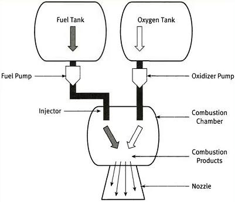
The provided diagram illustrates the components and operational mechanisms of a basic rocket engine.
提供的图表说明了基本火箭发动机的组件和运行机制。
Overall, the engine comprises five fundamental parts: tanks, pumps, injectors, a combustion chamber, and a nozzle. Its operation involved three key stages: the introduction of fuel and oxygen, the combustion of the oxygen-fuel amalgamation, and the subsequent expulsion of combustion products.
总体而言，发动机由五个基本部件组成：油箱、泵、喷射器、燃烧室和喷嘴。其运行涉及三
个关键阶段：燃料和氧气的引入、氧气-燃料混合物的燃烧以及随后燃烧产物的排出。
In the initial phase, the oxidizer pump initiates the injection of oxygen from the oxygen tank into the combustion chamber via the injector, establishing the requisite conditions for subsequent combustion. At the same time, the fuel pump helps the injection of stored fuel from the fuel tank into the combustion chamber, employing a similar procedure.
在初始阶段，氧化剂泵启动氧气罐中的氧气通过喷射器注入燃烧室，为后续燃烧建立必要的
条件。同时，燃料泵采用类似的程序帮助将储存的燃料从燃料箱注入燃烧室。
Subsequently, in the combustion chamber where these elements are ignited, resulting in a vigorous combustion that produces combustion products. These products are expelled from the rocket through a nozzle, characterized by a shape from a broader base to a narrower top. This design facilitates the rocket's ascent against the force of gravity.
随后，在燃烧室中，这些元素被点燃，导致剧烈燃烧并产生燃烧产物。这些产物通过喷嘴从
火箭中排出，喷嘴的形状从较宽的底部到较窄的顶部。这种设计有助于火箭克服重力上升。